What is OpenShift?
Enterprise Kubernetes with built-in security, automation, and a complete developer experience.
OpenShift at a Glance
Red Hat OpenShift Container Platform (OCP) is an enterprise Kubernetes distribution. It extends upstream Kubernetes with automated operations, consistent security, and developer tooling. Deploy and manage containerized applications at scale — on-premises, cloud, or edge.
Architecture Overview
Version Alignment — OCP, RHCOS, CRI-O & Kubernetes
OpenShift versions are tightly coupled with RHCOS, CRI-O, and Kubernetes. They are tested, qualified, and shipped together as a matched set. You never mix versions — upgrading OCP upgrades everything in lock-step.
RHCOS — Red Hat Enterprise Linux CoreOS
RHCOS is the immutable, container-optimized operating system that underpins every OpenShift node. It is versioned together with OpenShift — tested and shipped as a matched pair.
- Versioned with OCP — RHCOS releases are tied to OpenShift versions; they are tested and qualified together
- Cluster-managed — MCO handles CRI-O configuration, kubelet configuration, authorized container registries, and SSH access configuration
- CRI-O tracks Kubernetes — The CRI-O container runtime version is matched to the Kubernetes version in each OCP release
- Immutable by design — Root filesystem is read-only via ostree. Changes are applied atomically and can be rolled back
High-Level Deployment Architecture
OpenShift vs Kubernetes
| Capability | Kubernetes (Upstream) | OpenShift (OCP) |
|---|---|---|
| Operating System | Any Linux | RHCOS (immutable, auto-managed by MCO) |
| Installation | kubeadm, kops, manual | IPI / UPI / Assisted Installer / Agent-based |
| Upgrades | Manual, risky | OTA via ClusterVersion Operator (graph-based) |
| Networking | Choose your own CNI | OVN-Kubernetes built-in (Geneve tunnels) |
| Ingress | Ingress resource + external controller | Route + HAProxy built-in |
| Registry | External (DockerHub, etc.) | Built-in internal registry |
| Security | RBAC, PodSecurity | SCC, OAuth, sealed-by-default, FIPS |
| Monitoring | Bring your own | Prometheus + Alertmanager built-in |
| CI/CD | External tools | Pipelines (Tekton) + GitOps (ArgoCD) |
| Operators | OLM optional | OperatorHub + OLM built-in (200+) |
| Console | Basic dashboard | Full admin + developer console |
| Support | Community only | Red Hat Standard (8×5) or Premium (24×7) with SLA |
OpenShift Product Editions
Red Hat offers four self-managed editions that build upon each other. Operator and feature availability depends on which edition you subscribe to:
Support Tiers
| Feature | Standard | Premium |
|---|---|---|
| Support Hours | 8×5 (business hours) | 24×7 |
| Sev 1/2 Response | Business hours only | Around the clock |
| EUS (Extended Update Support) | Optional add-on | Included |
node-role.kubernetes.io/infra running only platform workloads (router, registry, monitoring) do not count toward subscription. However, on large bare-metal servers it is common to co-locate infra and app workloads on the same worker nodes — in that case the node does count toward subscription since it also runs application containers.
Installation Methods
OpenShift Virtualization
OpenShift Virtualization lets you run traditional virtual machines alongside containers on the same cluster. Based on the KubeVirt project, it wraps QEMU/KVM in Kubernetes-native CRDs.
Nodes & Node Types
Understanding the physical and logical building blocks of an OpenShift cluster.
What is a Node?
A node is a worker machine — physical or virtual — running containerized workloads. Every node runs:
- kubelet — agent ensuring containers run in pods
- CRI-O — lightweight OCI-compliant container runtime
- OVN-Kubernetes — SDN for pod networking
- Machine Config Daemon — applies OS-level configuration
Node Architecture
Node Comparison
| Property | Control Plane | Infrastructure | Worker |
|---|---|---|---|
| Purpose | Cluster brain — runs API Server, etcd, Controller Manager, Scheduler. Manages all cluster state and decisions. | Platform services — runs Ingress Controller (HAProxy), Registry, Prometheus, Alertmanager, Logging. Keeps platform workloads off worker nodes. | Application workloads — runs user pods, deployments, jobs. Where your actual business applications run. |
| OS | RHCOS only | RHCOS | RHCOS |
| Schedulable | No (default) | Yes (restricted by taints) | Yes |
| Min Count | 3 (HA) / 1 (SNO) | 2-3 recommended | 2+ (prod) |
| Subscription | Included | Free if only platform workloads | Charged |
Inside Every Node — Component Deep Dive
Every OpenShift node (control plane and worker) runs a set of core components. Understanding what each does is essential for troubleshooting and architecture decisions.
kubelet — The Node Agent
The kubelet is the primary agent on every node. It registers the node with the API server, watches for pod assignments, and ensures containers are running as expected.
- Pod lifecycle management — Creates, starts, stops, and restarts containers via CRI-O
- Image pulling — Pulls container images from registries based on
imagePullPolicy - Volume mounting — Coordinates with CSI drivers to stage and mount persistent volumes
- Health monitoring — Executes liveness, readiness, and startup probes. Restarts containers on liveness failure
- Resource enforcement — Enforces CPU/memory limits via cgroups. Evicts pods when node is under pressure (DiskPressure, MemoryPressure)
- Status reporting — Reports node conditions (Ready, MemoryPressure, DiskPressure, PIDPressure) and resource capacity to API server
- Static pods — On control plane nodes, kubelet manages static pods (etcd, kube-apiserver, kube-controller-manager, kube-scheduler) from
/etc/kubernetes/manifests/
# Check kubelet status on a node oc debug node/<node-name> -- chroot /host systemctl status kubelet # View kubelet logs oc debug node/<node-name> -- chroot /host journalctl -u kubelet --no-pager -n 50 # Check node conditions oc describe node <node-name> | grep -A5 Conditions
CRI-O — Container Runtime
CRI-O is the lightweight, OCI-compliant container runtime used by OpenShift. It implements the Kubernetes Container Runtime Interface (CRI) and completely replaces Docker.
- CRI gRPC interface — kubelet communicates with CRI-O via a Unix socket (
/var/run/crio/crio.sock). CRI-O handlesRunPodSandbox,CreateContainer,StartContainer,StopContainer,RemoveContainer - Image management — Pulls images from registries, stores in local storage. Supports image signing and mirror registries
- Container execution — Uses
runc(orcrun) as the low-level OCI runtime to create Linux containers with namespaces, cgroups, and seccomp - Version tracking — CRI-O version matches the Kubernetes version in each OCP release (e.g., OCP 4.14 = K8s 1.27 = CRI-O 1.27)
- No daemon — Unlike Docker, CRI-O has no long-running background daemon. Each container is a child of CRI-O managed by systemd
- Managed by MCO — CRI-O configuration (registries, runtimes, pids-limit) is delivered via MachineConfig objects. Never edit
/etc/crio/directly
# Check CRI-O status oc debug node/<node-name> -- chroot /host systemctl status crio # List containers on a node via crictl oc debug node/<node-name> -- chroot /host crictl ps # Inspect a container oc debug node/<node-name> -- chroot /host crictl inspect <container-id>
OVN-Kubernetes — Software-Defined Networking
OVN-Kubernetes is the default CNI plugin since OpenShift 4.12. It provides pod networking, service load balancing, and network policy enforcement using Open Virtual Network (OVN) on top of Open vSwitch (OVS).
- Geneve tunnels — Encapsulates pod-to-pod traffic across nodes in Geneve (Generic Network Virtualization Encapsulation) tunnels instead of VXLAN
- Replaces kube-proxy — Service load balancing is done natively in OVN via OVS flows. No iptables rules needed
- Logical topology — Creates logical switches (one per node), logical routers, ports, ACLs (for NetworkPolicy), and load balancers
- NetworkPolicy enforcement — Implemented as OVN ACLs. Stateful firewall applied at the OVS level. Evaluates ingress and egress rules
- EgressIP — Assigns a static source IP to pods in a namespace for outbound traffic. Useful for firewall allow-listing
- Multus — CNI meta-plugin allowing pods to have additional network interfaces (SR-IOV, Macvlan, bridge) alongside the primary OVN interface
CoreDNS — Cluster DNS
CoreDNS is the cluster DNS server providing service discovery. Every pod is configured to use CoreDNS for name resolution.
- Service discovery — Resolves
<service>.<namespace>.svc.cluster.localto the Service ClusterIP - Headless Services — For Services with
clusterIP: None, CoreDNS returns individual pod IPs (A records for StatefulSet pods:pod-0.svc.ns.svc.cluster.local) - External DNS — Forwards queries for non-cluster domains to upstream DNS servers configured on the node
- Managed by DNS Operator — The DNS Operator (openshift-dns-operator namespace) manages CoreDNS pods running as a DaemonSet in the openshift-dns namespace
- Port 53 — Listens on UDP/TCP port 53. When you restrict egress with NetworkPolicy, you must allow port 53 to openshift-dns or DNS resolution breaks
Machine Config Daemon (MCD)
The MCD is a DaemonSet that runs on every node. It is the node-level agent of the Machine Config Operator (MCO) and handles OS-level configuration delivery.
- Watches rendered MachineConfig — Each MachineConfigPool (master, worker, infra) has a rendered config. MCD compares current node config with the target
- Delivers configuration — Writes files (e.g., chrony.conf, registries.conf), enables/disables systemd units, sets kernel arguments, manages SSH authorized keys
- Triggers reboot — Most config changes require a node reboot. MCD coordinates: cordon → drain → apply → reboot → uncordon. One node at a time per pool
- No SSH needed — All OS configuration is declarative via MachineConfig CRDs. RHCOS admins are responsible for nothing — the MCO handles it
Node Tuning Operator
The Node Tuning Operator manages node-level performance tuning via Tuned profiles. A tuned DaemonSet pod runs on every node applying sysctl parameters, hugepage allocation, CPU governor settings, and NUMA pinning.
- Default profiles — Ships with profiles for general workloads. Custom profiles for real-time, low-latency, and high-performance computing
- PerformanceProfile CRD — For telco/edge workloads, defines CPU isolation, hugepages, real-time kernel, and NUMA topology
- No reboot needed — Most tuning changes are applied live (unlike MachineConfig changes). Kernel parameters take effect immediately
CSI Node Plugin
Each storage provider runs a CSI Node Plugin as a DaemonSet on every node. It handles the last-mile operations of making storage available to pods.
- NodeStageVolume — Formats the device (if needed) and mounts it to a staging path on the node
- NodePublishVolume — Bind-mounts from the staging path into the pod's mount namespace. The pod sees a regular directory
- Driver registrar — Registers the CSI driver with kubelet so it knows which driver handles which StorageClass
- Multiple drivers — A node can run multiple CSI node plugins simultaneously (e.g., ODF for Ceph + vSphere for VMDKs)
Monitoring & Logging Agents
Every node runs DaemonSet pods for observability:
- node-exporter — Prometheus exporter that collects hardware and OS metrics: CPU usage, memory, disk I/O, filesystem space, network stats. Scraped by platform Prometheus
- Vector (or Fluentd) — Log collector DaemonSet that reads container logs from
/var/log/containers/and journal logs, then forwards to Loki or external log stores - Collector (ACS) — If ACS is installed, CO-RE BPF-based DaemonSet monitors process execution, network connections, and file access on every node for runtime threat detection
Taints, Tolerations & Affinity
How the scheduler decides which node runs each pod — and how you control placement.
Scheduling Decision Flow
Taints & Tolerations
A taint on a node repels pods. A toleration on a pod allows it to schedule on a tainted node. Taints are key=value:effect.
# Add taint to a node oc adm taint nodes worker-1 dedicated=infra:NoSchedule # Pod toleration to match spec: tolerations: - key: "dedicated" operator: "Equal" value: "infra" effect: "NoSchedule" # Remove taint oc adm taint nodes worker-1 dedicated=infra:NoSchedule-
Example: Toleration Matching
Node has taint dedicated=gpu:NoSchedule. Only pods with matching toleration can schedule there.
Node Affinity
# Hard requirement: only schedule in us-east zones spec: affinity: nodeAffinity: requiredDuringSchedulingIgnoredDuringExecution: nodeSelectorTerms: - matchExpressions: - key: topology.kubernetes.io/zone operator: In values: [us-east-1a, us-east-1b]
Infra Node Setup Example
Common design workshop task: dedicate nodes for platform services (router, registry, monitoring) to avoid subscription costs and resource contention.
# 1. Label workers as infra oc label node worker-3 node-role.kubernetes.io/infra="" oc label node worker-4 node-role.kubernetes.io/infra="" # 2. Taint infra nodes (prevent user workloads) oc adm taint nodes worker-3 worker-4 node-role.kubernetes.io/infra=reserved:NoSchedule oc adm taint nodes worker-3 worker-4 node-role.kubernetes.io/infra=reserved:NoExecute # 3. Move Ingress Controller to infra nodes oc patch ingresscontroller/default -n openshift-ingress-operator --type=merge -p \ '{"spec":{"nodePlacement":{"nodeSelector":{"matchLabels":{"node-role.kubernetes.io/infra":""}},"tolerations":[{"key":"node-role.kubernetes.io/infra","value":"reserved","effect":"NoSchedule"},{"key":"node-role.kubernetes.io/infra","value":"reserved","effect":"NoExecute"}]}}}' # 4. Move Monitoring to infra nodes (edit ConfigMap) oc -n openshift-monitoring edit cm cluster-monitoring-config # Add nodeSelector + tolerations under prometheusK8s, alertmanagerMain # 5. Move Registry to infra nodes oc patch configs.imageregistry.operator.openshift.io/cluster --type=merge -p \ '{"spec":{"nodeSelector":{"node-role.kubernetes.io/infra":""},"tolerations":[{"key":"node-role.kubernetes.io/infra","value":"reserved","effect":"NoSchedule"},{"key":"node-role.kubernetes.io/infra","value":"reserved","effect":"NoExecute"}]}}'
Core Resources
The fundamental Kubernetes and OpenShift objects that compose every application deployment.
Container Image Lifecycle
Before a container can run in a Pod, its image must be built and pushed to a registry. Here is how source code becomes a running container.
# Example Dockerfile FROM registry.access.redhat.com/ubi9/python-311:latest COPY . /app RUN pip install -r /app/requirements.txt EXPOSE 8080 CMD ["python", "/app/main.py"] # Build, tag, push podman build -t my-app:v1.0 . podman tag my-app:v1.0 registry.example.com/team/my-app:v1.0 podman push registry.example.com/team/my-app:v1.0
- Dockerfile / Containerfile — Text file with instructions to build image. Each instruction (FROM, COPY, RUN) creates a layer. Use multi-stage builds to reduce final image size.
- Build —
podman buildorbuildah budexecutes Dockerfile. OpenShift also supports BuildConfig for in-cluster builds (S2I, Docker, Custom strategies). - Layers — Images are stacked read-only layers. Base OS at bottom, app code at top. Shared layers between images save disk and pull time.
- Tag — Names image with registry/repository:tag format. Use semantic versioning (
:v1.2.0) not:latestin production. - Push — Uploads layers to registry. OpenShift has built-in registry at
image-registry.openshift-image-registry.svc:5000. External: Quay, Docker Hub, private registries. - Pull — When pod starts, kubelet tells CRI-O to pull image. Pull policy:
Always,IfNotPresent,Never. Use ImagePullSecret for private registries.
How Resources Wire Together
Each resource references others via specific YAML fields. Understanding these connections is key to building and debugging applications.
Resource Quick Reference
| Resource | Scope | Purpose |
|---|---|---|
| Container | Pod | Running process from an image |
| Image | Registry | Immutable binary artifact (OCI format) |
| Pod | Namespace | Smallest deployable unit; wraps 1+ containers |
| Deployment | Namespace | Manages ReplicaSets with rolling updates and rollback |
| ReplicaSet | Namespace | Ensures N pod replicas are running (managed by Deployment) |
| DaemonSet | Namespace | Runs one pod per matching node |
| StatefulSet | Namespace | Ordered pods with stable network IDs and per-pod PVCs |
| ConfigMap | Namespace | Stores non-sensitive config as key-value pairs |
| Secret | Namespace | Stores sensitive data (tokens, passwords) |
| Service | Namespace | Stable VIP + DNS name for pod access |
| Route | Namespace | External hostname with TLS termination |
| Namespace / Project | Cluster | Logical isolation; Project adds default RBAC |
oc new-project instead of kubectl create namespace.
Pod Anatomy — How a Pod Uses Resources
A Pod consumes configuration, secrets, and storage by referencing other Kubernetes objects. Compare this to how a traditional VM gets its config.
Deployment In Depth
A Deployment is the primary controller for stateless workloads. It creates and manages ReplicaSets, which in turn create Pods. When you update a Deployment (e.g., new image), it creates a new ReplicaSet and gradually shifts pods from old to new — this is a rolling update.
# Create a deployment oc create deployment nginx --image=nginx:1.25 --replicas=3 # Update image (triggers rolling update) oc set image deployment/nginx nginx=nginx:1.26 # Check rollout status oc rollout status deployment/nginx # Rollback to previous version oc rollout undo deployment/nginx # View revision history oc rollout history deployment/nginx
Namespaces & Projects
Logical isolation boundaries — how OpenShift organizes and secures multi-tenant workloads.
Namespace vs Project
A Namespace is the Kubernetes-native isolation boundary. An OpenShift Project is a Namespace with extra capabilities: automatic RBAC roles for the creator (admin, edit, view), annotation templates, and default node selectors. Every Project is a Namespace, but not every Namespace is a Project.
oc new-project creates a Project with default RoleBindings (creator gets admin). kubectl create namespace creates a bare Namespace without OpenShift defaults — no RBAC, no self-provisioner template applied.
Project Anatomy
Default System Namespaces
| Namespace | Purpose |
|---|---|
| openshift-apiserver | OpenShift API Server pods |
| openshift-etcd | etcd cluster members |
| openshift-ingress | Ingress Controller (HAProxy) pods |
| openshift-monitoring | Prometheus, Alertmanager, Thanos |
| openshift-logging | Loki, Vector, logging stack |
| openshift-operators | AllNamespaces operator installs |
| openshift-image-registry | Internal container image registry |
| kube-system | Kubernetes core components |
| default | Default namespace for ad-hoc resources |
Governance Resources
Multi-Tenancy Model
OpenShift provides soft multi-tenancy via namespace isolation. Each team gets their own Project with:
- RBAC — Role-based access scoped to the project. Users cannot see other projects by default.
- Resource Quotas — Cluster admin sets CPU/memory/pod limits per project
- Network Isolation — NetworkPolicy restricts cross-namespace traffic
- Node Isolation — Taints + tolerations can dedicate nodes per team
Common Commands
# Create a new project (with default RBAC) oc new-project my-app --display-name="My Application" # Switch to a project oc project my-app # List all projects you have access to oc get projects # Admin: create project for another user oc adm new-project team-backend --admin=alice # Set resource quota oc create quota compute --hard=cpu=8,memory=16Gi,pods=20 -n my-app # View current resource usage vs quota oc describe quota -n my-app # Delete a project (WARNING: deletes all resources inside) oc delete project my-app
Pod Lifecycle
Understanding how pods are created, scheduled, run, and terminated in OpenShift.
What is a Pod?
A pod is the smallest deployable unit in Kubernetes/OpenShift. It wraps one or more containers that share the same network namespace (IP address), storage volumes, and lifecycle. Most pods run a single application container.
Pod Lifecycle Flow
Resource Management
requests guarantee a minimum amount of CPU/memory. limits set the maximum. If a container exceeds its memory limit, it gets OOMKilled. If it exceeds CPU limit, it gets throttled.
resources: requests: cpu: "250m" # 0.25 CPU cores guaranteed memory: "256Mi" # 256 MiB guaranteed limits: cpu: "1000m" # Max 1 CPU core (throttled beyond) memory: "512Mi" # Max 512 MiB (OOMKilled beyond)
Deployments & Workloads
How to deploy applications and choose the right workload controller on OpenShift.
Deployment Methods
Deployment Sources
| Source | What It Is | When to Use |
|---|---|---|
| Git Repository | Application source code in a git repo (GitHub, GitLab, Bitbucket). OpenShift can build directly from source using S2I or Dockerfile. | Developers pushing code. CI/CD pipelines. No pre-built image available. |
| Container Image | Pre-built OCI image from a registry (Quay, Docker Hub, internal registry). Already contains app + dependencies. | Most common. Image built externally by CI pipeline. Vendor-provided images. |
| Helm Chart | Package of templated Kubernetes YAML manifests with configurable values.yaml. Versioned, reusable, shareable. | Complex apps with many resources. Community-maintained charts. Parameterized deployments. |
| YAML / Kustomize | Raw Kubernetes manifests applied directly. Kustomize adds patching and overlay for environment-specific config. | Full control over resources. GitOps workflows. Environment overlays (dev/staging/prod). |
Deployment Methods
| Method | How It Works | Best For |
|---|---|---|
| oc new-app | Auto-detects source type (git, image, template) and creates Deployment + Service + BuildConfig. One command to go from zero to running app. | Quick start. Dev/test environments. Learning OpenShift. |
| Source-to-Image (S2I) | OpenShift-specific build strategy. Combines source code + builder image (e.g., python-311) → produces runnable image. No Dockerfile needed. | Developers who don’t want to write Dockerfiles. Standardized builds across teams. |
| Helm Install | helm install renders chart templates with values and applies to cluster. Manages releases with upgrade/rollback. | Packaged applications. OperatorHub alternatives. Multi-environment deploys. |
| GitOps (ArgoCD) | OpenShift GitOps operator deploys ArgoCD. Watches git repo, auto-syncs cluster state to match repo. Declarative, auditable. | Production. Multi-cluster. Compliance. Audit trail. Team collaboration. |
| oc apply -f | Applies YAML manifests directly. Supports directories, URLs, kustomize overlays (oc apply -k). | CI/CD pipelines. Scripted deployments. Full manifest control. |
| Tekton Pipelines | OpenShift Pipelines operator. Kubernetes-native CI/CD. Tasks run as pods. Pipeline = ordered tasks (build, test, deploy). | Cloud-native CI/CD. Replace Jenkins. Reusable task catalog. |
# Deploy from container image oc new-app --image=registry.example.com/team/my-app:v1.0 --name=my-app # Deploy from git repo (S2I auto-detect) oc new-app https://github.com/team/my-app.git --name=my-app # Deploy from Helm chart helm install my-app ./chart --set replicas=3 # Deploy from YAML oc apply -f deployment.yaml # Deploy with Kustomize overlays oc apply -k overlays/production/ # Expose app externally oc expose svc/my-app
Workload Controllers
| Controller | Purpose | Use Case |
|---|---|---|
| Deployment | Manages stateless pods via ReplicaSets. Rolling updates, rollback, scaling. | Web apps, APIs, microservices — most workloads |
| StatefulSet | Ordered pod creation with stable network identity (pod-0, pod-1...) and per-pod PVCs. | Databases, Kafka, ZooKeeper, etcd — stateful apps |
| DaemonSet | Runs exactly one pod per node (or per matching node). Auto-scales with cluster. | Monitoring agents, log collectors, CSI drivers, CNI plugins |
| Job | Runs pod(s) to completion, then stops. Tracks success/failure count. | Batch processing, data migration, one-time tasks |
| CronJob | Creates Jobs on a cron schedule. Manages job history (successfulJobsHistoryLimit). | Scheduled reports, backups, cleanup tasks |
Deployment Strategies
Installation & Bootstrap
How OpenShift clusters are installed across different platforms, and the bootstrap process that brings a cluster to life.
Installation by Platform
VMware vSphere — IPI vs UPI
VMware vSphere supports both IPI and UPI. IPI automates everything; UPI gives full control at cost of manual steps.
| Task | IPI (Installer-Provisioned) | UPI (User-Provisioned) |
|---|---|---|
| Build Network | Automated | Manual |
| Setup Load Balancer | Automated | Manual |
| Configure DNS | Automated | Manual |
| Hardware Provisioning | Automated | Manual |
| OS Installation | Automated (RHCOS PXE/ISO) | Manual (RHCOS ISO/PXE) |
| Ignition Configs | Generated & applied automatically | Generated, manually applied |
| Node Scaling | MachineSet auto-scaling | Manual node addition |
IPI vs UPI Decision Matrix
| Requirement | IPI | UPI |
|---|---|---|
| DHCP | Required | Optional (static IPs) |
| DNS | Auto-configured | Pre-configured required |
| vCenter Privilege | Admin-level required | Read-only sufficient |
| Node Naming | Auto-generated | Custom naming |
| External Load Balancer | Auto-provisioned | Pre-configured required |
| IP Assignment | DHCP only | Static or DHCP |
Bootstrap Process
The bootstrap process is a temporary, self-destructing sequence that brings the cluster from zero to a running control plane.
Network Connectivity Ports
| Protocol | Port Range | Purpose |
|---|---|---|
| TCP | 6443 | Kubernetes API server |
| TCP | 22623 | Machine Config Server (bootstrap) |
| TCP | 2379-2380 | etcd server + peer communication |
| TCP | 9000-9999 | Host-level services (node exporter, etc.) |
| TCP | 10250-10259 | Kubernetes node ports (kubelet, controllers) |
| TCP | 30000-32767 | NodePort services |
| UDP | 4789 | VXLAN (legacy SDN) |
| UDP | 6081 | Geneve (OVN-Kubernetes) |
| UDP | 9000-9999 | Host-level services |
| TCP/UDP | 500, 4500 | IPsec (if enabled) |
Agent-Based Installer
Generates a single bootable ISO containing the Assisted Service, discovery agent, and OCP release image. Fully self-contained — no external service or internet needed. One host acts as the rendezvous host, running the Assisted Service locally.
Disconnected / Air-Gapped Installation
A mirror registry is an OCI-compliant container image registry that holds copies of images from external sources (Red Hat registries, Docker Hub, etc.). In disconnected environments, it replaces internet-based registries entirely — all nodes pull images from it instead of going online.
How it works: On the connected side,
oc-mirror downloads OCP release images, operator catalogs, and any additional images into the mirror registry. The registry data is then exported and transferred to the disconnected environment via portable media (USB, external disk). On the disconnected side, the same registry software is deployed and loaded with the transferred data. Both sides use the same concept — a mirror registry — just in different network zones.Registry options: Red Hat provides a lightweight
mirror-registry tool (single binary, based on Quay, no subscription required) for quick setup. Alternatively, use Red Hat Quay, Harbor, Nexus, or any OCI-compliant registry. The key requirement is supporting ImageContentSourcePolicy (ICSP) or ImageDigestMirrorSet (IDMS, OCP 4.13+) to redirect image pulls from original sources to the mirror.Day-2: Ongoing updates also go through the mirror registry — run
oc-mirror periodically to sync new release images and operator versions, then transfer to the disconnected side.
Bare Metal — Assisted Installer
Red Hat’s SaaS-hosted installation service at console.redhat.com or deployable on-prem via the Infrastructure Operator (part of MCE/RHACM). Provides a web UI and REST API for guided cluster deployment.
Networking & Routes
How traffic flows from external clients to your application pods inside OpenShift.
Network Architecture
OpenShift has three distinct networks, each serving a different purpose:
- Host Network (Physical) — Real routable IPs on node NICs. Carries API (:6443), etcd (:2379), kubelet (:10250), and Geneve tunnel traffic. The only network with actual packets on the wire.
- Service Network (Virtual) — ClusterIP range 172.30.0.0/16. No real interface exists — OVN-Kubernetes implements via OVS flow rules. CoreDNS resolves service names to ClusterIPs.
- Pod Network (Overlay) — Each pod gets a unique IP from 10.128.0.0/14. Each node gets a /23 subnet (510 IPs). Cross-node traffic tunneled via Geneve (UDP 6081) over Host Network.
Ingress Traffic Flow
How Services Work
A Service provides a stable VIP and DNS name for a set of pods. It uses label selectors to dynamically discover backend pods. When pods scale or restart, endpoints update automatically.
Routes & Ingress Controller
A Route exposes a Service to external traffic via a hostname. The Ingress Controller (HAProxy) watches Route objects and configures proxying rules automatically.
Cluster Network Defaults
| Network | Default CIDR | Details |
|---|---|---|
| Pod Network | 10.128.0.0/14 | /23 per node = 512 subnets, 510 IPs per node |
| Service Network | 172.30.0.0/16 | 65,534 ClusterIP addresses |
| Host Network | Infrastructure-dependent | Physical/VM network connecting nodes |
api.<cluster>.<domain> → API LB VIP (port 6443) — control plane access
api-int.<cluster>.<domain> → Internal API LB — node-to-API communication
*.apps.<cluster>.<domain> → Ingress LB VIP (ports 443/80) — application routes
See Installation & Bootstrap section for full DNS and load balancer details.
OVN-Kubernetes
OVN-Kubernetes is the default CNI plugin since OpenShift 4.12. It replaces the legacy OpenShift SDN.
- Encapsulation: Uses Geneve tunnels (not VXLAN)
- Logical networking: Creates logical switches, routers, ports, ACLs, and load balancers
- No kube-proxy: OVN handles service load balancing natively via OVS flows
- NetworkPolicy: Enforced via OVN ACLs for microsegmentation
EgressIP
By default, outbound traffic from pods uses the node IP as source. This is a problem when external firewalls need to whitelist your cluster — you'd need to allow ALL node IPs, and they change when nodes scale. EgressIP assigns a predictable, static source IP to all outbound traffic from a namespace.
# 1. Label nodes as egress-assignable oc label node worker-1 k8s.ovn.org/egress-assignable="" oc label node worker-2 k8s.ovn.org/egress-assignable="" # 2. Create EgressIP object oc apply -f - <<EOF apiVersion: k8s.ovn.org/v1 kind: EgressIP metadata: name: my-app-egress spec: egressIPs: - 192.168.1.155 namespaceSelector: matchLabels: kubernetes.io/metadata.name: my-app EOF # 3. Verify EgressIP assignment oc get egressip oc get egressip my-app-egress -o yaml
Multus CNI
Multus is a meta-plugin that enables pods to have multiple network interfaces. The primary interface uses OVN-Kubernetes; additional interfaces can use SR-IOV, macvlan, bridge, or other CNI plugins. Common for telco, NFV, and high-performance workloads.
Deployment Strategies via Routes
alternateBackends in Route spec.NetworkPolicy
NetworkPolicy
Kubernetes-native microsegmentation — control which pods can talk to which at the network level.
How NetworkPolicy Works
from item, all selectors are ANDed (podSelector AND namespaceSelector must both match). Across multiple from items, they are ORed (match ANY item). This is the most common source of confusion.
# Allow DNS egress (add to every namespace with deny-all) apiVersion: networking.k8s.io/v1 kind: NetworkPolicy metadata: name: allow-dns spec: podSelector: {} policyTypes: [Egress] egress: - to: - namespaceSelector: matchLabels: kubernetes.io/metadata.name: openshift-dns ports: - port: 53 protocol: UDP - port: 53 protocol: TCP
# View policies in a namespace oc get networkpolicy -n my-app # Test connectivity between pods oc exec deploy/frontend -- curl -s -o /dev/null -w "%{http_code}" http://backend:8080/health
Storage & CSI Drivers
How persistent storage works in OpenShift using the Container Storage Interface.
Storage Architecture
Static vs Dynamic Provisioning
Reclaim Policies
| Policy | Behavior | Notes |
|---|---|---|
| Retain | PV persists after PVC deletion; admin must manually clean up | Safe for important data; requires manual intervention |
| Delete | PV and backend storage are automatically deleted when PVC is removed | Dynamic provisioning only; default for most cloud StorageClasses |
Access Modes
| Mode | Abbreviation | Description | Backends |
|---|---|---|---|
| ReadWriteOnce | RWO | Single node read/write | All (EBS, Ceph RBD, vSphere VMDK) |
| ReadOnlyMany | ROX | Multiple nodes read-only | NFS, CephFS, some CSI drivers |
| ReadWriteMany | RWX | Multiple nodes read/write simultaneously | CephFS, NFS, Azure Files |
| ReadWriteOncePod | RWOP | Single pod read/write (tech preview) | CSI drivers with support |
CSI Architecture Details
Complete Example — PVC + Deployment
Create a PersistentVolumeClaim, then reference it in a Deployment. StorageClass triggers dynamic provisioning automatically.
# 1. PersistentVolumeClaim — request 10Gi block storage apiVersion: v1 kind: PersistentVolumeClaim metadata: name: app-data namespace: my-app spec: accessModes: - ReadWriteOnce # Single node read-write storageClassName: thin-csi # StorageClass name (vSphere thin disk) resources: requests: storage: 10Gi # Requested size
# 2. Deployment — mount PVC into container apiVersion: apps/v1 kind: Deployment metadata: name: my-app namespace: my-app spec: replicas: 1 selector: matchLabels: app: my-app template: metadata: labels: app: my-app spec: containers: - name: app image: registry.example.com/my-app:1.0 ports: - containerPort: 8080 volumeMounts: - name: data mountPath: /var/data # Path inside container resources: requests: cpu: "250m" memory: "256Mi" limits: cpu: "500m" memory: "512Mi" volumes: - name: data persistentVolumeClaim: claimName: app-data # References PVC above
# Apply and verify oc apply -f pvc.yaml -f deployment.yaml # Check PVC is Bound oc get pvc -n my-app # NAME STATUS VOLUME CAPACITY ACCESS STORAGECLASS # app-data Bound pvc-a1b2c3d4.. 10Gi RWO thin-csi # Verify mount inside pod oc exec deploy/my-app -- df -h /var/data
Security & SCC
How OpenShift enforces security at the pod level using Security Context Constraints.
Security Context Constraints (SCC)
SCC are an OpenShift-specific security mechanism that controls what a pod can do at the OS level: run as root, access host network, mount volumes, use capabilities, etc. They are evaluated during pod admission.
SCC Admission Flow
SCC Controls
Security Context Constraints control the following OS-level capabilities for pods:
| Control | Description |
|---|---|
| Privileged containers | Allow/deny running as privileged (full host access) |
| Linux capabilities | Add/drop specific capabilities (NET_ADMIN, SYS_PTRACE, etc.) |
| Host directories | Allow/deny hostPath volume mounts |
| SELinux context | Enforce specific SELinux labels on containers |
| User ID | Run as specific UID or UID range (MustRunAs, MustRunAsRange, RunAsAny) |
| Host namespaces | Allow/deny access to host PID, IPC namespaces |
| Host networking | Allow/deny use of host network + host ports |
| FSGroup | Set filesystem group ownership for volumes |
| Supplemental groups | Control additional group memberships |
| Read-only root FS | Force read-only root filesystem |
| Volume types | Restrict allowed volume types (emptyDir, configMap, PVC, etc.) |
| Seccomp profiles | Apply syscall filtering profiles |
RBAC — Role-Based Access Control
RBAC in OpenShift controls who can do what on which resources.
- Rules — Define verbs (get, list, create, update, delete) + resources (pods, services) + API groups
- Roles — A collection of rules. Role is namespace-scoped; ClusterRole is cluster-scoped
- Bindings — Bind subjects (users, groups, ServiceAccounts) to a Role. RoleBinding is namespace-scoped; ClusterRoleBinding is cluster-scoped
Cluster Role vs Local Role
OpenShift has two scopes for roles: ClusterRole (cluster-scoped, reusable across namespaces) and Role (namespace-scoped, applies only within its namespace). The binding type determines where permissions take effect:
| Combination | Scope | Use Case |
|---|---|---|
| Role + RoleBinding | Single namespace only | Custom per-project permissions (e.g., bot SA with limited access) |
| ClusterRole + RoleBinding | Single namespace (scoped down) | Reuse standard roles (view/edit/admin) in specific projects |
| ClusterRole + ClusterRoleBinding | All namespaces cluster-wide | Cluster-admin, global monitoring, platform-level operators |
view, edit, and admin ClusterRoles are reused across projects via namespace-scoped RoleBindings. You rarely need to create a local Role unless permissions are truly project-specific.
RBAC Authorization Flow
Default Cluster Roles
| ClusterRole | Scope | Permissions |
|---|---|---|
| cluster-admin | Cluster | Full access to all resources in all namespaces. Superuser. |
| admin | Namespace | Full control within a namespace. Can create roles and bindings. Cannot modify quota or namespace itself. |
| edit | Namespace | Read/write most resources (pods, deployments, services, configmaps, secrets). Cannot manage roles or bindings. |
| view | Namespace | Read-only access. Cannot view secrets or roles. No write operations. |
| self-provisioner | Cluster | Allows creating new projects. Bound to all authenticated users by default. Remove to lock down project creation. |
| basic-user | Cluster | Can read own user info. Get basic access to projects they belong to. |
ServiceAccounts
Every namespace has a default ServiceAccount. Pods use it for API authentication. Custom SAs isolate permissions per workload. Tokens are auto-mounted at /var/run/secrets/kubernetes.io/serviceaccount/token.
# Create a ServiceAccount oc create sa my-app -n my-namespace # Grant a role to a user in a namespace oc adm policy add-role-to-user edit developer -n my-project # Grant cluster-admin to a user oc adm policy add-cluster-role-to-user cluster-admin admin-user # Check if a user can perform an action oc auth can-i create deployments -n my-project --as developer # List role bindings in a namespace oc get rolebindings -n my-project # Remove self-provisioner from all authenticated users oc adm policy remove-cluster-role-from-group self-provisioner system:authenticated:oauth
admin, edit, and view roles are built using aggregation labels. When operators install CRDs, they can add rules to these roles automatically by setting rbac.authorization.k8s.io/aggregate-to-admin: "true" on their ClusterRoles.
OAuth Authentication Flow
Logging & Monitoring
Observability stack for log collection, metric storage, alerting, and dashboarding in OpenShift.
Monitoring Architecture
OpenShift ships a fully integrated monitoring stack managed by the Cluster Monitoring Operator. All components are deployed automatically and run in the openshift-monitoring namespace.
Monitoring Components
| Component | What It Does | Details |
|---|---|---|
| Prometheus (x2 HA) | Time-series database. Scrapes metrics from all targets every 30s via pull model. | Runs in openshift-monitoring. 15-day default retention. Each instance stores data independently on PVC. 100+ built-in alerting rules. |
| Thanos Sidecar | Runs alongside each Prometheus. Exposes StoreAPI for remote reads. | Enables Thanos Querier to aggregate data from multiple Prometheus instances without data duplication. |
| Thanos Querier | Unified PromQL query endpoint. Aggregates data from all Thanos Sidecars. | Single entry point for OCP Console dashboards and external Grafana. Deduplicates HA pairs. |
| Alertmanager (x2 HA) | Receives firing alerts from Prometheus. Routes, deduplicates, groups, and sends notifications. | Supports Slack, PagerDuty, email, webhook, OpsGenie. Silencing and inhibition rules. Cluster-scoped HA gossip. |
| node-exporter | DaemonSet exposing host-level metrics: CPU, memory, disk, network per node. | Scraped by Prometheus. Metrics like node_cpu_seconds_total, node_memory_MemAvailable_bytes. |
| kube-state-metrics | Generates metrics from Kubernetes object state (deployments, pods, nodes, etc.). | Metrics like kube_deployment_status_replicas, kube_pod_status_phase. Not resource usage — object state. |
| Prometheus Adapter | Exposes custom Prometheus metrics via Kubernetes Metrics API. | Enables HPA (Horizontal Pod Autoscaler) to scale based on custom metrics like requests-per-second. |
| UWM Prometheus | Separate Prometheus instance for user workloads. | Scrapes user-created ServiceMonitor/PodMonitor resources. Isolated from platform monitoring. Must be enabled. |
Logging Architecture
OpenShift logging uses Loki for storage, Vector for collection, and the ClusterLogForwarder CR for routing. Three operators work together: Logging Operator (deploys Vector), Loki Operator (manages LokiStack), and Cluster Observability Operator (console integration).
Logging Components
| Component | What It Does | Details |
|---|---|---|
| Vector | Log collector. DaemonSet running on every node. Reads container logs and journald. | Rust-based, low memory (~50MB). Reads from /var/log/containers/ and journald. Replaces Fluentd (deprecated). Supports parsing, filtering, transforms. |
| ClusterLogForwarder | Custom resource defining log routing pipelines. Connects inputs (log types) to outputs (destinations). | Three input types: application, infrastructure, audit. Output types: lokiStack, splunk, elasticsearch, cloudwatch, kafka, syslog, http. Filter by namespace. |
| LokiStack | Log storage backend. Stores log data in object storage with metadata indexing. | Components: Distributor (receives), Ingester (writes chunks), Compactor (optimizes), Querier (reads), Query-frontend (caches). Requires S3-compatible object storage (ODF NooBaa, AWS S3, Azure Blob). |
| Logging Operator | Deploys and manages Vector DaemonSet. Watches ClusterLogForwarder CR. | Install from OperatorHub. Creates collector pods in openshift-logging namespace. |
| Loki Operator | Deploys and manages LokiStack. Handles sizing, storage config, tenant separation. | Sizes: 1x.demo, 1x.extra-small, 1x.small, 1x.medium. Manages schema upgrades and compaction. |
| Cluster Observability Operator | Provides UIPlugin for log viewing in OCP Console. | Adds “Logs” tab to pod/namespace views. LogQL query support. Replaces legacy Kibana UI. |
| Log Tenants | Loki enforces RBAC via three built-in tenants. | application: user pod logs. infrastructure: openshift-*/kube-* pod logs + journald. audit: API server, OAuth, OVN audit logs. |
# Check monitoring stack health oc get pods -n openshift-monitoring oc get pods -n openshift-user-workload-monitoring # Check logging stack health oc get pods -n openshift-logging # View Prometheus alerts firing oc get prometheusrules -A oc -n openshift-monitoring exec -c prometheus prometheus-k8s-0 -- promtool query instant http://localhost:9090 'ALERTS{alertstate="firing"}' # Check log collector status oc get clusterlogforwarder -n openshift-logging oc logs ds/collector -n openshift-logging --tail=20
Operators & OLM
How OpenShift uses the Operator pattern to manage platform components and applications.
What is an Operator?
An Operator encodes human operational knowledge into software. It watches Custom Resources (CRs) and takes automated action: provisioning, scaling, backup, upgrades, failover. OpenShift itself is managed by ~30 built-in Cluster Operators.
Operator Lifecycle
Operator Pattern — How It Works
An Operator is a controller that watches Custom Resources (CRDs) and runs a reconciliation loop: observe current state → compare with desired state → take corrective action. This encodes human operational knowledge into software.
Common Operators
| Operator | Source | What It Manages |
|---|---|---|
| Logging (Loki) | Red Hat | Log collection (Vector DaemonSet), storage (Loki), and forwarding |
| Compliance | Red Hat | CIS/NIST/PCI-DSS compliance scanning and remediation |
| Network Observability | Red Hat | eBPF-based network flow metrics, topology, and tracing |
| ODF | Red Hat | Ceph storage cluster (block, file, object) |
| ACS (StackRox) | Red Hat | Container security: CVE scanning, admission control, runtime monitoring |
| ACM | Red Hat | Multi-cluster lifecycle, governance, observability |
| Cert-Manager | Community | TLS certificate automation (Let's Encrypt, ACME) |
| External Secrets | Community | Sync secrets from external stores (Vault, AWS SM, Azure KV) |
# List installed operators (ClusterServiceVersions) oc get csv -A # List subscriptions oc get sub -A # Check pending install plans (Manual approval) oc get installplan -A # Approve a pending install plan oc patch installplan <name> -n <ns> --type merge -p '{"spec":{"approved":true}}' # Check cluster operators status oc get co
ACM — Advanced Cluster Management
Manage multiple OpenShift and Kubernetes clusters from a single hub.
What is ACM?
Red Hat ACM provides multi-cluster lifecycle management: provision clusters, enforce governance policies, deliver applications, aggregate observability, and search resources across the fleet.
Hub & Spoke Architecture
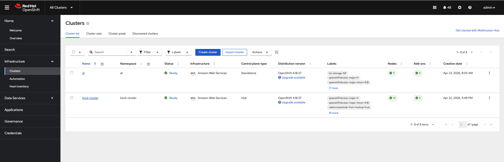
Hosted Control Planes (HyperShift)
Through MCE, the ACM hub can run Hosted Control Planes: spoke clusters whose control planes (API server, etcd, controllers) run as pods on the hub, while only worker nodes live at the spoke site. This cuts per-cluster cost (no 3 dedicated control-plane machines), speeds up cluster creation to minutes, and decouples control-plane and worker upgrades — widely used for fleet, edge, and telco deployments.
Governance & Policy Framework
ACM’s Governance, Risk & Compliance (GRC) framework lets you define policies on the hub and distribute them to managed clusters. Each policy specifies what to check, where to apply it (via Placement), and how to respond (inform or enforce).
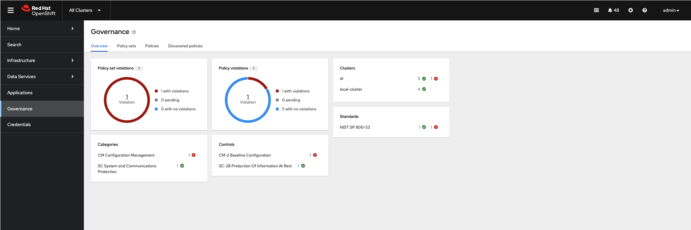
Policy Types
| Policy Type | Purpose | Example Use Case |
|---|---|---|
| ConfigurationPolicy | Enforce or audit any K8s resource configuration | Require resource limits on all Deployments |
| CertificatePolicy | Monitor certificate expiration | Alert when certs expire within 30 days |
| OperatorPolicy | Ensure operators are installed & configured | Require compliance-operator on all clusters |
| Gatekeeper constraint | Admission-time enforcement via OPA (ACM deploys & manages Gatekeeper) | Reject pods without required labels at admission |
IamPolicy template (limit cluster-admin role bindings) is deprecated and removed in current ACM releases. Replace it with a Gatekeeper constraint or a ConfigurationPolicy that audits ClusterRoleBindings.
Live Example — CertificatePolicy Catching an Expiring Certificate
A CertificatePolicy named check-cert monitors TLS secrets in the swongpai-helm namespace with a minimum duration of 300 hours. When a certificate falls below that threshold, ACM flags it as NonCompliant and shows exactly which secret is about to expire.
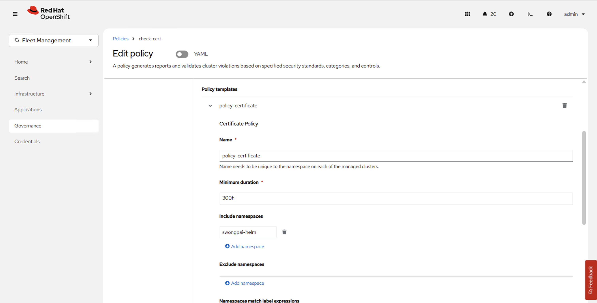
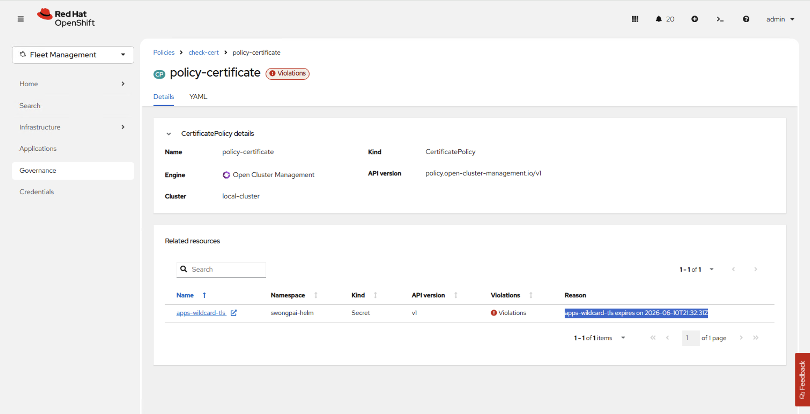
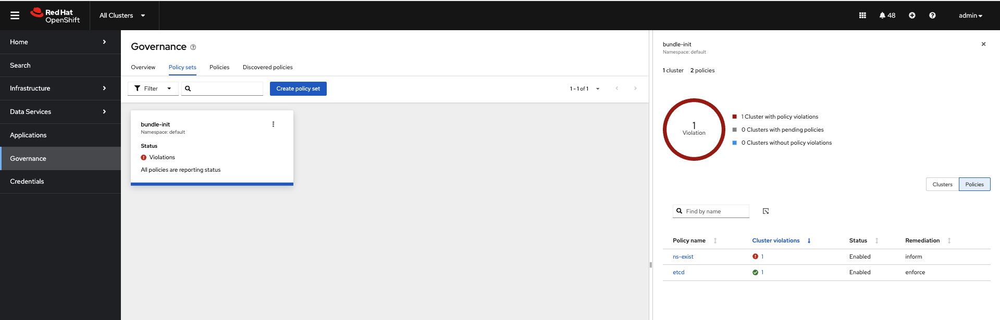
How Policy Works
A Policy is a wrapper that contains one or more policy templates (ConfigurationPolicy, CertificatePolicy, etc.). The Policy is created on the hub, bound to target clusters via PlacementBinding + Placement, and distributed by the Policy Controller. On each managed cluster, a local controller evaluates the templates and reports compliance status back to the hub.
Policy Structure
Every Policy has three core settings:
| Field | Values | Meaning |
|---|---|---|
remediationAction | inform / enforce | inform = audit only, report violations. enforce = auto-create/update/delete resources to match desired state. |
severity | low / medium / high / critical | Displayed in dashboard. No enforcement impact — purely informational for prioritization. |
disabled | true / false | Toggle policy on/off without deleting it. Useful for testing before rollout. |
remediationAction. Set to inform to audit and report violations without changing anything. Set to enforce to automatically remediate — ACM will create/update/delete resources to match desired state. Start with inform in production, switch to enforce after validation. The policy-level remediationAction overrides the template-level setting.
ConfigurationPolicy — Compliance Types
ConfigurationPolicy is the most common and versatile template. It compares desired object definitions against actual cluster state using three compliance types:
| complianceType | Behavior | When to use |
|---|---|---|
musthave | Object must exist with at least the specified fields. Extra fields on the object are ignored. | Ensure a Namespace has specific labels, a LimitRange exists, or a NetworkPolicy is present. |
mustonlyhave | Object must exist with exactly the specified fields. Extra fields are removed on enforce. | Lock down a SecurityContextConstraint or RBAC RoleBinding — no extra permissions allowed. |
mustnothave | Object must not exist. If found, enforce deletes it. | Forbid default ServiceAccount tokens, remove permissive NetworkPolicies, delete test namespaces in production. |
ConfigurationPolicy Example
apiVersion: policy.open-cluster-management.io/v1
kind: ConfigurationPolicy
metadata:
name: require-limitrange
spec:
remediationAction: inform # start with audit
severity: medium
namespaceSelector:
include: ["*"]
exclude: ["openshift-*", "kube-*"]
object-templates:
- complianceType: musthave
objectDefinition:
apiVersion: v1
kind: LimitRange
metadata:
name: default-limits
spec:
limits:
- type: Container
default:
cpu: "500m"
memory: "512Mi"
defaultRequest:
cpu: "100m"
memory: "128Mi"apiVersion: policy.open-cluster-management.io/v1
kind: ConfigurationPolicy
metadata:
name: no-privileged-pods
spec:
remediationAction: inform
severity: high
namespaceSelector:
include: ["*"]
exclude: ["openshift-*", "kube-*"]
object-templates:
- complianceType: mustnothave
objectDefinition:
apiVersion: v1
kind: Pod
metadata:
namespace: "{{ .metadata.namespace }}"
spec:
containers:
- securityContext:
privileged: trueFull Policy Wrapper
A ConfigurationPolicy doesn’t work alone — it must be wrapped in a Policy and bound to clusters via PlacementBinding + Placement. One frequently missed prerequisite: Placement only selects clusters from ManagedClusterSets that are bound to the policy namespace via a ManagedClusterSetBinding. Here’s the complete set of resources:
# 1. Policy — wraps ConfigurationPolicy template
apiVersion: policy.open-cluster-management.io/v1
kind: Policy
metadata:
name: policy-require-limitrange
namespace: open-cluster-management-policies
annotations:
policy.open-cluster-management.io/standards: NIST SP 800-53
policy.open-cluster-management.io/categories: CM Configuration Management
policy.open-cluster-management.io/controls: CM-2 Baseline Configuration
spec:
remediationAction: inform
disabled: false
policy-templates:
- objectDefinition:
apiVersion: policy.open-cluster-management.io/v1
kind: ConfigurationPolicy
metadata:
name: require-limitrange
spec:
remediationAction: inform
severity: medium
namespaceSelector:
include: ["*"]
exclude: ["openshift-*", "kube-*"]
object-templates:
- complianceType: musthave
objectDefinition:
apiVersion: v1
kind: LimitRange
metadata:
name: default-limits
spec:
limits:
- type: Container
default:
cpu: "500m"
memory: "512Mi"
---
# 2. ManagedClusterSetBinding — Placement only selects clusters from
# ManagedClusterSets bound to the policy namespace
apiVersion: cluster.open-cluster-management.io/v1beta2
kind: ManagedClusterSetBinding
metadata:
name: global
namespace: open-cluster-management-policies
spec:
clusterSet: global
---
# 3. Placement — select target clusters
apiVersion: cluster.open-cluster-management.io/v1beta1
kind: Placement
metadata:
name: placement-require-limitrange
namespace: open-cluster-management-policies
spec:
predicates:
- requiredClusterSelector:
labelSelector:
matchExpressions:
- key: env
operator: In
values: ["production", "staging"]
---
# 4. PlacementBinding — links Policy ↔ Placement
apiVersion: policy.open-cluster-management.io/v1
kind: PlacementBinding
metadata:
name: binding-require-limitrange
namespace: open-cluster-management-policies
placementRef:
apiGroup: cluster.open-cluster-management.io
kind: Placement
name: placement-require-limitrange
subjects:
- apiGroup: policy.open-cluster-management.io
kind: Policy
name: policy-require-limitrangePolicyGenerator — GitOps for Policies
PolicyGenerator is a Kustomize plugin that eliminates boilerplate. Instead of writing Policy + PlacementBinding + Placement by hand for each rule, you write a compact policyGenerator.yaml and run kustomize build — it generates all three resources automatically. This is the recommended approach for managing policies in Git (GitOps).
How PolicyGenerator Works
| Concept | What it does |
|---|---|
policyDefaults | Set defaults for all policies: namespace, remediationAction, severity, placement selectors. Individual policies can override. |
policies[].manifests | Point to YAML files containing the raw Kubernetes objects you want to enforce (LimitRange, NetworkPolicy, etc.). PolicyGenerator wraps each in a ConfigurationPolicy automatically. |
placementBindingDefaults | Default name for generated PlacementBinding resources. |
policies[].policyAnnotations | Map compliance standards/categories/controls for audit reporting (NIST, CIS, PCI-DSS). |
PolicyGenerator Example
apiVersion: policy.open-cluster-management.io/v1
kind: PolicyGenerator
metadata:
name: gen-security-baseline
placementBindingDefaults:
name: binding-security-baseline
policyDefaults:
namespace: open-cluster-management-policies
remediationAction: inform
severity: medium
consolidateManifests: false # one ConfigurationPolicy per manifest file
placement:
labelSelector:
matchExpressions:
- key: env
operator: In
values: ["production", "staging"]
policies:
- name: require-resource-limits
manifests:
- path: manifests/limitrange.yaml
policyAnnotations:
policy.open-cluster-management.io/standards: NIST SP 800-53
policy.open-cluster-management.io/categories: CM Configuration Management
- name: require-network-policies
severity: high
remediationAction: enforce # override default for this policy
manifests:
- path: manifests/deny-all-netpol.yaml
- path: manifests/allow-dns-netpol.yaml
policyAnnotations:
policy.open-cluster-management.io/standards: CIS Kubernetes Benchmark
- name: require-pod-disruption-budget
manifests:
- path: manifests/pdb.yaml# kustomization.yaml — in the same directory as policyGenerator.yaml
apiVersion: kustomize.config.k8s.io/v1beta1
kind: Kustomization
generators:
- policyGenerator.yaml
# Run: kustomize build --enable-alpha-plugins .
# Output: Policy + PlacementBinding + Placement for each entryPolicyGenerator Workflow
| Step | Action | Tool |
|---|---|---|
| 1 | Write plain K8s manifests (LimitRange, NetworkPolicy, etc.) | kubectl / editor |
| 2 | Write policyGenerator.yaml referencing manifests | editor |
| 3 | Run kustomize build --enable-alpha-plugins . | kustomize CLI |
| 4 | Review generated Policy + PlacementBinding + Placement | review |
| 5 | Commit to Git → ArgoCD/GitOps applies to hub | git + ArgoCD |
| 6 | ACM distributes policies to matched clusters | ACM Policy Controller |
policyGenerator.yaml + raw manifests in a Git repo. Use ArgoCD ApplicationSet (with ACM Placement) to apply them to the hub — full GitOps lifecycle for governance. Start all policies with remediationAction: inform, review compliance dashboards, then switch to enforce per-policy.
Application Deployment
ACM delivers applications to managed clusters using ArgoCD ApplicationSets with ACM Placement. ArgoCD supports two deployment modes: Push (hub ArgoCD applies to remote clusters) and Pull (each cluster runs its own ArgoCD that pulls from Git). Both use the same ApplicationSet + Placement CRDs on the hub.
Push vs Pull — How to Choose
| Factor | Push Model | Pull Model |
|---|---|---|
| Network requirement | Hub must reach spoke API servers | Spokes only need Git access (outbound) |
| ArgoCD on spokes | Not required | Required (or Argo CD Agent) |
| Drift detection | Centralized on hub | Local per cluster |
| Failure blast radius | Hub failure stops all deployments | Hub failure only stops new placements; existing clusters self-heal |
| Scale | Tens of clusters | Hundreds to thousands |
| Disconnected / air-gap | Not possible | Supported (Git mirror on-site) |
| Best for | Centralized ops, dev/staging, small fleets | Edge, telco, regulated, large fleets |
ApplicationSet with ACM Placement
apiVersion: argoproj.io/v1alpha1 kind: ApplicationSet metadata: name: my-app namespace: openshift-gitops spec: generators: - clusterDecisionResource: configMapRef: acm-placement labelSelector: matchLabels: cluster.open-cluster-management.io/placement: my-placement requeueAfterSeconds: 180 template: metadata: name: 'my-app-{{name}}' spec: project: default source: repoURL: https://github.com/org/my-app.git targetRevision: main path: 'overlays/{{name}}' destination: server: '{{server}}' namespace: my-app
Live Example — ApplicationSet Deploying via GitOps
An ApplicationSet named timecheck pulls from a Git repo (github.com/Surote/simple-fastapi-deployment) via ArgoCD push model. ACM Placement targets the local cluster. The topology view shows the full resource tree: ApplicationSet → Placement → Cluster → Route + Deployment + Service → ReplicaSet → Pod.
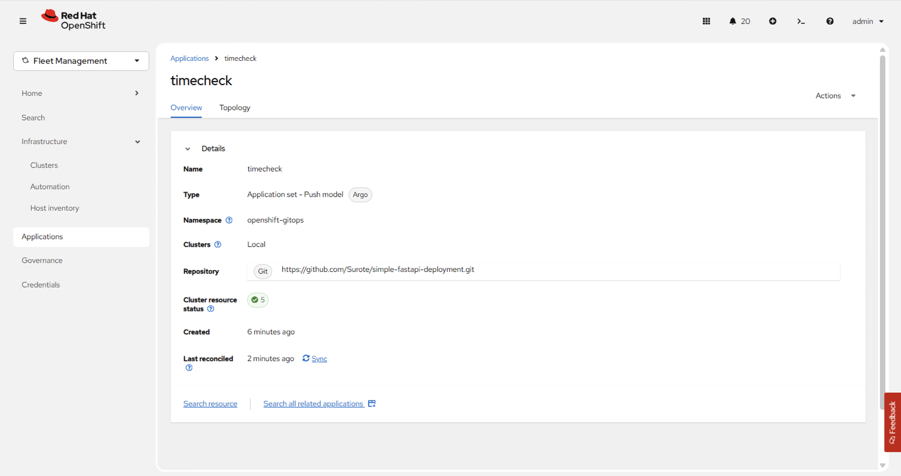
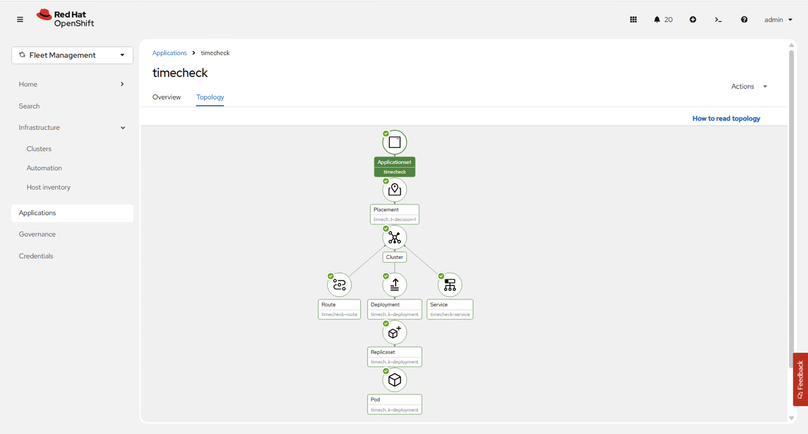
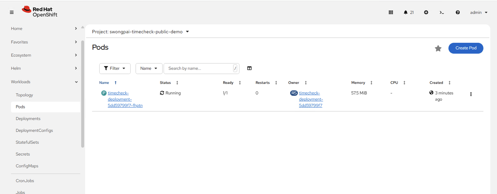
Observability
ACM aggregates metrics from all managed clusters into a central Thanos deployment on the hub. Each managed cluster runs a metrics-collector (based on Prometheus) that pushes metrics to the hub’s Thanos Receive endpoint. Grafana dashboards on the hub provide fleet-wide visibility: cluster health, resource utilization, API server latency, etcd performance, and custom alerts across the entire fleet.
MultiClusterObservability CR with a thanos.yaml secret containing bucket credentials. Retention defaults to 5 days for recent, 1 year for downsampled.
MultiClusterObservability CR
apiVersion: observability.open-cluster-management.io/v1beta2
kind: MultiClusterObservability
metadata:
name: observability
spec:
observabilityAddonSpec:
enableMetrics: true
interval: 300 # collection interval (seconds)
storageConfig:
metricObjectStorage:
name: thanos-object-storage # Secret with S3 creds
key: thanos.yaml
statefulSetSize: 10Gi # local cache per Thanos component
retentionConfig:
retentionResolutionRaw: 5d
retentionResolution5m: 14d
retentionResolution1h: 365d
advanced:
queryFrontend:
replicas: 2
receive:
replicas: 3# thanos.yaml — referenced by MultiClusterObservability
type: s3
config:
bucket: acm-observability
endpoint: s3.openshift-storage.svc:443
insecure: false
access_key: <from ObjectBucketClaim Secret>
secret_key: <from ObjectBucketClaim Secret>What's New in Recent ACM Releases
| Version | Highlights |
|---|---|
| 2.14 | Observability backup/restore for hub migrations. namespaceMapping on restore (OADP) — restore resources into a different namespace. |
| 2.15 | Fleet virtualization perspective — manage OpenShift Virtualization VMs across all clusters from the hub. Right-sizing recommendations for cluster resources. Argo CD agent (Tech Preview) — pull-based GitOps that scales to large/edge fleets. |
| 2.16 | Latest release — see the ACM 2.16 release notes for details. |
ACS — Advanced Cluster Security
Full-lifecycle container security from build to runtime.
What is ACS?
Red Hat ACS (formerly StackRox) provides vulnerability management, compliance scanning, network segmentation, and runtime threat detection across your entire container environment. It secures workloads at every stage — build, deploy, and runtime — from a single centralized console.
Key Capabilities
ACS Architecture
ACS uses a hub-spoke model. Central runs on a dedicated cluster (or the ACM hub). Each protected cluster runs Secured Cluster components that report to Central via gRPC/mTLS.
Policy & Violation Flow
ACS ships with an extensive built-in security policy library covering CVEs, misconfigurations, runtime anomalies, and compliance standards. Policies evaluate at build, deploy, or runtime — violations trigger alerts, block deployments, or kill pods depending on enforcement configuration. Policies can also be managed declaratively as code via the SecurityPolicy CRD (GitOps-friendly).
Deploying ACS on OpenShift
ACS is deployed via the RHACS Operator from OperatorHub. Install Central on a hub cluster, then deploy SecuredCluster bundles on each managed cluster.
Deployment Steps
| # | Step | Detail |
|---|---|---|
| 1 | Install RHACS Operator | OperatorHub → Advanced Cluster Security for Kubernetes → Install |
| 2 | Create Central CR | Deploys Central, Scanner V4, Dashboard UI, Central DB on hub cluster |
| 3 | Generate init-bundle | roxctl central init-bundles generate — creates cluster-specific TLS secrets |
| 4 | Apply init-bundle | Apply generated Secret to each managed cluster’s stackrox namespace |
| 5 | Create SecuredCluster CR | Deploys Sensor + Collector + Admission Controller on each managed cluster |
Central CR
apiVersion: platform.stackrox.io/v1alpha1
kind: Central
metadata:
name: stackrox-central-services
namespace: stackrox
spec:
central:
exposure:
route:
enabled: true # auto-create Route
persistence:
persistentVolumeClaim:
claimName: stackrox-db
db:
isEnabled: Default # managed PostgreSQL
persistence:
persistentVolumeClaim:
claimName: central-db
scanner:
analyzer:
scaling:
autoScaling: Enabled
maxReplicas: 5
minReplicas: 2
replicas: 3
scannerComponent: AutoSense # V4 when availableSecuredCluster CR
apiVersion: platform.stackrox.io/v1alpha1
kind: SecuredCluster
metadata:
name: stackrox-secured-cluster
namespace: stackrox
spec:
clusterName: production
centralEndpoint: central-stackrox.apps.hub.example.com:443
admissionControl: # 4.9+ console: single ON/OFF enforcement toggle
listenOnCreates: true
listenOnUpdates: true
listenOnEvents: true # runtime enforcement
contactImageScanners: ScanIfMissing
perNode:
collector:
collection: CORE_BPF # only supported method since ACS 4.5
imageFlavor: Regular
taintToleration: TolerateTaintsinform enforcement on all policies — switch to enforce per-policy after tuning to avoid false-positive blocks in production.
Key Features Deep Dive
Vulnerability Management
ACS scans images using Scanner V4 — the default scanner since ACS 4.8 (the legacy StackRox Scanner is deprecated) — and correlates CVEs with deployment context: is the vulnerable package in the running container? Is the port exposed? Is there a known exploit? This produces a risk score that prioritizes remediation beyond raw CVSS. Since ACS 4.10, base-image layers are distinguished from application-added layers, so platform and app teams each see the CVEs they own.
| Capability | Detail |
|---|---|
| Image scanning | Scans on first deploy + continuous re-scan as new CVEs are published |
| Risk prioritization | Combines CVSS + exploit availability + deployment exposure + network reachability |
| Fix tracking | Shows which CVEs have fixes available in newer package versions |
| Image policy | Block images from untrusted registries, with :latest tag, or exceeding CVE thresholds |
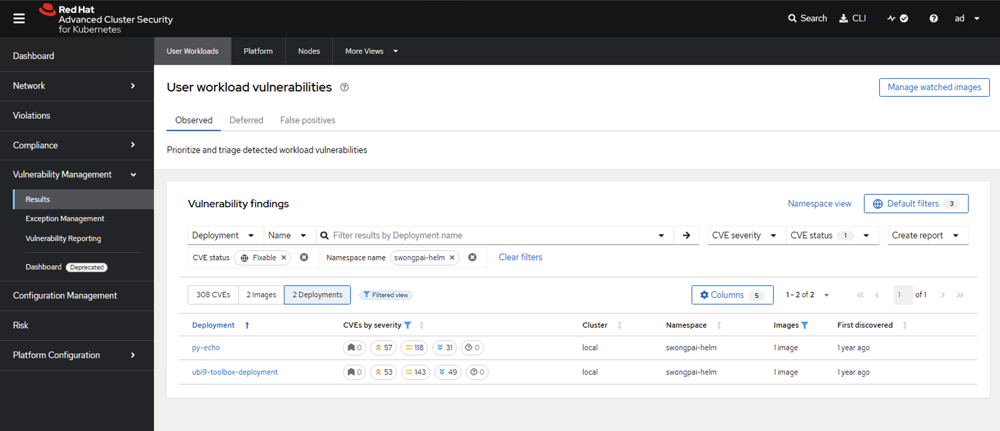
Network Segmentation
ACS builds a real-time network flow graph from Collector observations. Visualize actual pod-to-pod and pod-to-external traffic, then generate NetworkPolicy YAML from observed flows — zero-trust microsegmentation without manual policy writing.
- Visualize active network flows per namespace and deployment
- Detect unexpected connections (e.g., frontend directly reaching database)
- Auto-generate NetworkPolicy from baseline traffic patterns
- Simulate policy changes before applying
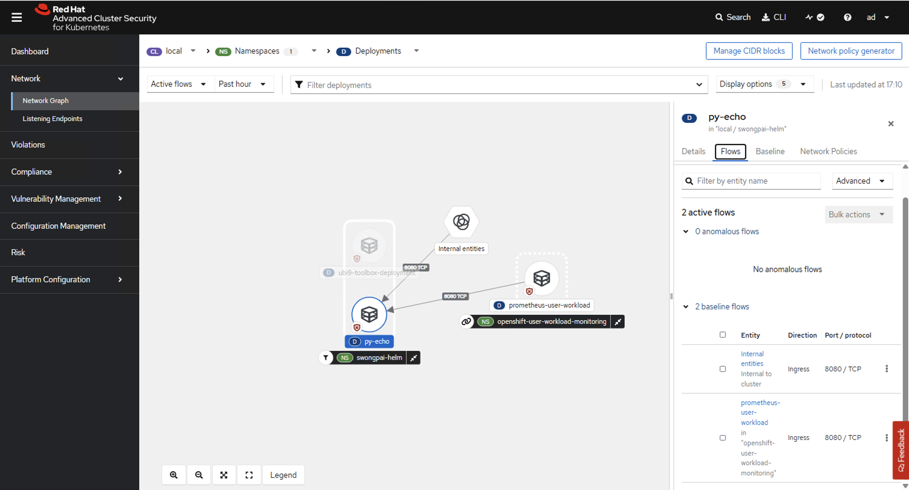
Runtime Detection
Collector uses CO-RE BPF probes (Compile Once – Run Everywhere eBPF) on each node to monitor all container processes, network connections, and file access in real-time — without modifying containers, requiring sidecars, or loading per-kernel drivers.
- Process monitoring — detect unexpected binaries (crypto miners, reverse shells, nmap)
- Network monitoring — detect unexpected outbound connections or lateral movement
- File access — detect reads/writes to sensitive paths (
/etc/shadow,/proc) - Response actions — alert only, scale to zero, or kill pod immediately
Live Example — Process Discovery in Action
Run a few commands inside a pod terminal, and Collector picks them up instantly. Below: curl and tracepath executed in a toolbox pod, then flagged by ACS under Risk → Process Discovery with full parent-process lineage and timestamps.
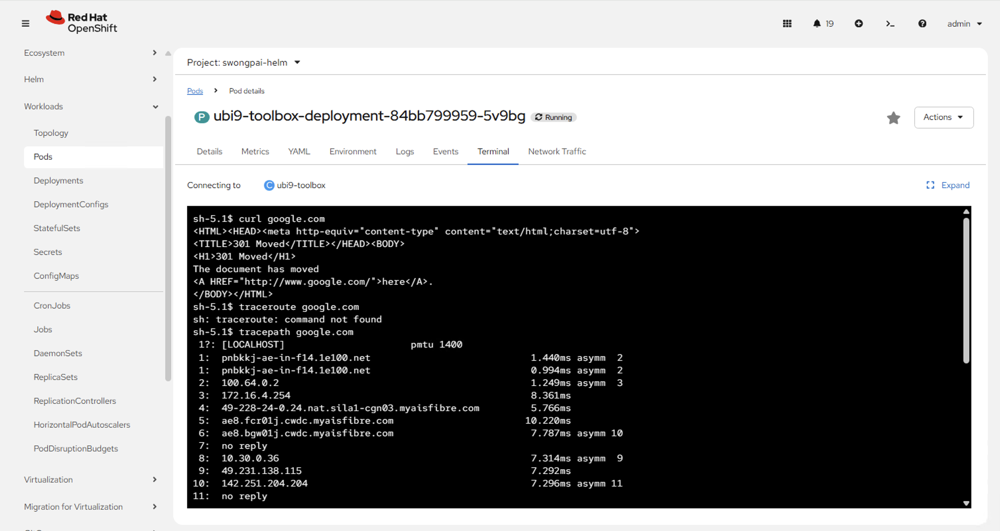
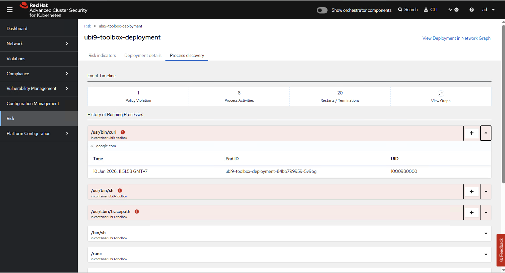
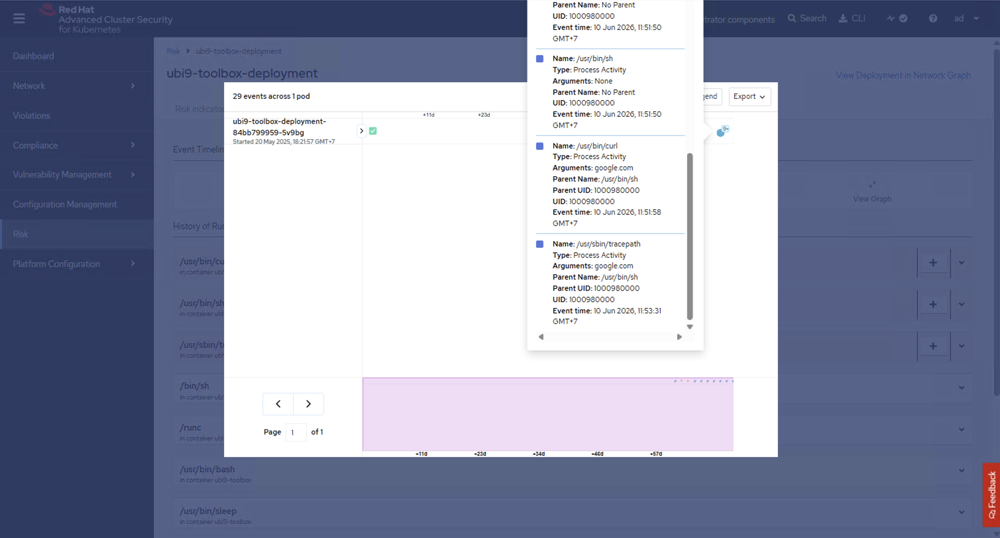
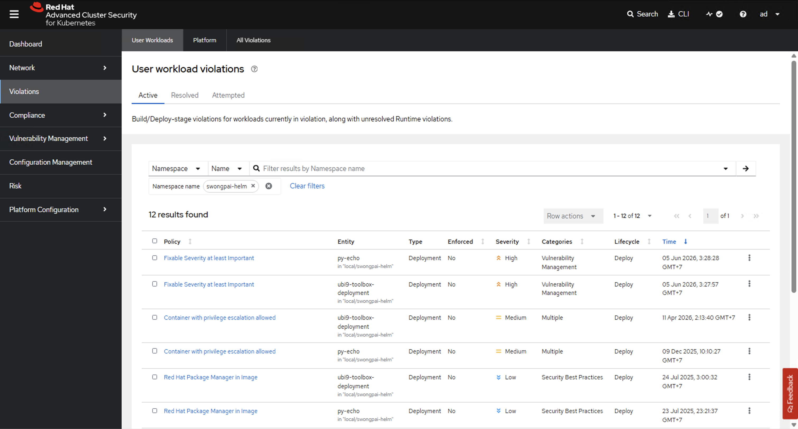
Compliance Scanning
ACS continuously evaluates clusters against industry compliance standards and generates audit-ready reports. Current ACS delivers this through Compliance v2: the Compliance Operator runs the actual node/platform scans on each secured cluster, while ACS schedules scans, aggregates fleet-wide results, and produces reports.
- Supported standards: CIS Kubernetes Benchmark, NIST SP 800-190, PCI DSS 4.0, HIPAA, NERC-CIP
- Per-cluster and per-namespace compliance dashboards
- Export PDF/CSV reports for auditors
- Requires the Compliance Operator installed on each secured cluster for node-level checks
CI/CD Integration (roxctl)
The roxctl CLI integrates ACS into CI/CD pipelines to shift security left — catch issues before deployment.
roxctl image check— evaluate image against all deploy-time policiesroxctl image scan— scan image for CVEs and return results as JSONroxctl deployment check— validate deployment YAML against policies- Exit code non-zero on policy violation — fails the pipeline
Policy as Code (SecurityPolicy CRD)
ACS policies can be managed declaratively with the SecurityPolicy custom resource on the Central cluster — store policies in Git, apply via ArgoCD, and keep security rules under the same GitOps review flow as application manifests.
apiVersion: config.stackrox.io/v1alpha1
kind: SecurityPolicy
metadata:
name: no-latest-tag
namespace: stackrox # must be on the Central cluster
spec:
policyName: "Image uses :latest tag"
description: "Forbid mutable :latest tags in production"
severity: HIGH_SEVERITY
categories:
- DevOps Best Practices
lifecycleStages:
- BUILD
- DEPLOY
scope:
- cluster: production
policySections:
- sectionName: Image tag
policyGroups:
- fieldName: Image Tag
values:
- value: latestLive Example — "Image uses :latest tag" Policy as Code
A SecurityPolicy CRD deployed via GitOps creates the "Image uses :latest tag" policy in ACS. The policy is marked Externally managed (origin), meaning it’s controlled by the CRD — not editable in the UI. When a deployment uses :latest, ACS raises a deploy-time violation.
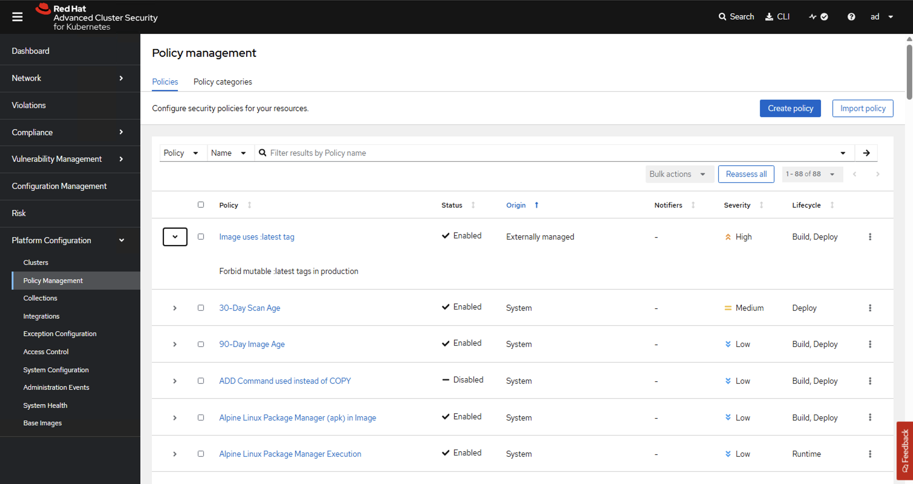
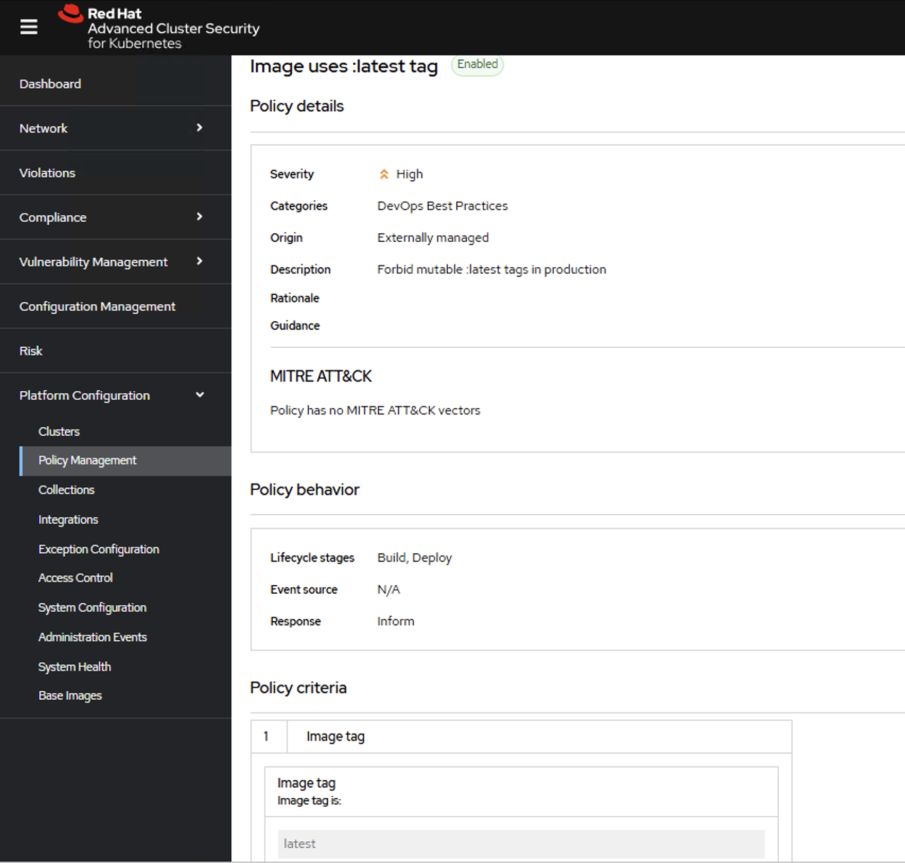
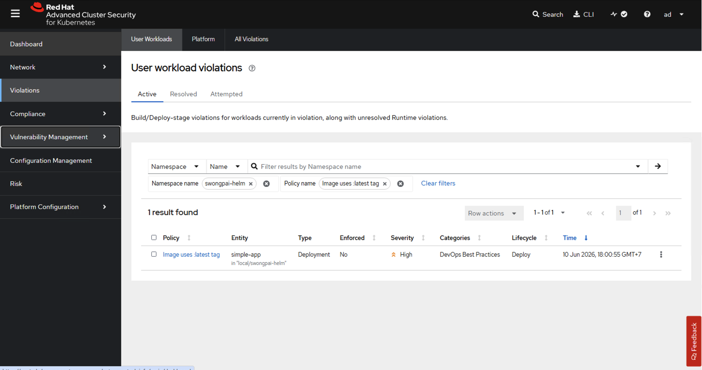
What's New in Recent ACS Releases
| Version | Highlights |
|---|---|
| 4.8 | Scanner V4 becomes the default scanner (StackRox Scanner deprecated). External IP visibility in the network graph. |
| 4.9 | Auto-locking process baselines (scope a policy to a namespace — new deployments alert from Day 1). Simplified admission controller: single ON/OFF enforcement toggle. Machine-to-machine OIDC auth for API automation. Cluster registration secret default expiry reduced to 1 hour. |
| 4.10 | VM vulnerability scanning for OpenShift Virtualization (Tech Preview). OpenShift Console security plugin — vulnerability data inside the OCP console (Tech Preview). Base-image vs application-layer CVE separation. File activity monitoring (Tech Preview). CVE fix-date policy criterion for remediation SLAs. |
ODF — OpenShift Data Foundation
Software-defined storage powered by Ceph, providing block, file, and object storage inside OpenShift.
What is ODF?
OpenShift Data Foundation (ODF) is Red Hat's software-defined storage solution for OpenShift, built on Ceph and managed by the Rook operator. It provides block (RBD), file (CephFS), and S3-compatible object (NooBaa MCG) storage as native Kubernetes resources. ODF eliminates external storage array dependencies by running storage services directly on OpenShift nodes with local or attached disks.
Key Capabilities
ODF Architecture
Data Flow: PVC to Disk
When a pod requests persistent storage, the request flows through Kubernetes and ODF layers. The path differs by storage type: RBD for block (RWO) and CephFS for shared file (RWX). Both ultimately write to OSDs on physical disks, distributed by the CRUSH algorithm.
Storage Types Comparison
ODF exposes three distinct storage types. Choose based on access mode requirements and workload characteristics.
| Type | Protocol | Access Mode | Use Cases | Backing Service | StorageClass |
|---|---|---|---|---|---|
| RBD (Block) | Kernel RBD | RWO, RWOP, RWX (Block) | Databases (PostgreSQL, MySQL), VMs, general-purpose | Ceph RADOS Block Device | ocs-storagecluster-ceph-rbd |
| CephFS (File) | POSIX filesystem | RWX, RWO | Shared config, CMS uploads, ML training data, CI artifacts | Ceph MDS + OSDs | ocs-storagecluster-cephfs |
| NooBaa MCG (Object) | S3 API | N/A (API) | Backups (OADP), log archives (Loki), ML datasets, multi-cloud tiering | NooBaa + backing stores | openshift-storage.noobaa.io |
ocs-storagecluster-ceph-rbd-virtualization — an RBD StorageClass tuned for VM disks (RWX block mode for live migration). Use it as the default StorageClass for VMs instead of the regular RBD class.
Deploying ODF on OpenShift
ODF is deployed via the ODF Operator from OperatorHub. The operator installs the Rook-Ceph operator, NooBaa operator, and CSI drivers. Internal mode uses local disks on labeled nodes; external mode connects to a pre-existing Ceph cluster. A third option, provider mode, lets one dedicated ODF cluster serve storage to multiple consumer OpenShift clusters.
Deployment Steps
| # | Step | Detail |
|---|---|---|
| 1 | Label storage nodes | oc label node <name> cluster.ocs.openshift.io/openshift-storage="" — minimum 3 nodes |
| 2 | Install ODF Operator | OperatorHub → Red Hat OpenShift Data Foundation → Install (creates openshift-storage namespace) |
| 3 | Create StorageCluster | Console → Installed Operators → ODF → Create StorageCluster → select internal-attached devices (the StorageSystem CRD was removed in ODF 4.19 — StorageCluster is created directly) |
| 4 | Verify StorageClasses | oc get sc — confirm ocs-storagecluster-ceph-rbd, ocs-storagecluster-cephfs, openshift-storage.noobaa.io |
| 5 | Create first PVC | Use new StorageClasses in PVC manifests or set ocs-storagecluster-ceph-rbd as default StorageClass |
StorageCluster CR
apiVersion: ocs.openshift.io/v1
kind: StorageCluster
metadata:
name: ocs-storagecluster
namespace: openshift-storage
spec:
manageNodes: false
monDataDirHostPath: /var/lib/rook
storageDeviceSets:
- name: ocs-deviceset
count: 1 # devices per node
dataPVCTemplate:
spec:
accessModes:
- ReadWriteOnce
resources:
requests:
storage: 512Gi # size per OSD
storageClassName: localblock
volumeMode: Block
placement: {}
portable: true
replica: 3 # 3-way replication
multiCloudGateway:
reconcileStrategy: standaloneExample PVCs
# RBD block volume (RWO) — databases, general storage
apiVersion: v1
kind: PersistentVolumeClaim
metadata:
name: my-app-data
namespace: my-app
spec:
accessModes:
- ReadWriteOnce
resources:
requests:
storage: 10Gi
storageClassName: ocs-storagecluster-ceph-rbd
---
# CephFS shared volume (RWX) — shared across pods/nodes
apiVersion: v1
kind: PersistentVolumeClaim
metadata:
name: shared-uploads
namespace: my-app
spec:
accessModes:
- ReadWriteMany
resources:
requests:
storage: 50Gi
storageClassName: ocs-storagecluster-cephfsocs-storagecluster-ceph-rbd as the default StorageClass for most workloads. Reserve CephFS for workloads that genuinely need RWX shared access. Monitor cluster health via the ODF dashboard in the OpenShift console or ceph status from the Rook toolbox pod.
Key Concepts Deep Dive
CRUSH Algorithm & Failure Domains
CRUSH (Controlled Replication Under Scalable Hashing) is Ceph's data placement algorithm. Instead of centralized lookup tables, CRUSH computes where data should be stored algorithmically based on the cluster topology. This enables Ceph to scale without metadata bottlenecks.
- Failure domains — CRUSH distributes replicas across fault boundaries: host (default), rack, zone, or region. No two replicas of the same object land in the same failure domain.
- CRUSH map — Defines the storage hierarchy: root → datacenter → rack → host → OSD. ODF auto-generates this from node topology labels.
- CRUSH rules — Bind pools to specific device classes (SSD vs HDD) and failure domain levels. ODF creates default rules for replicated and erasure-coded pools.
- Rebalancing — When nodes/OSDs are added or removed, CRUSH recomputes placement. Only the minimum necessary data migrates (no full reshuffle).
Replication & Erasure Coding
ODF supports two data protection strategies. Replication (default) writes N full copies across failure domains. Erasure coding splits data into data + parity chunks for better space efficiency at higher CPU cost.
- 3-way replication (default) — Every object stored 3 times across 3 failure domains. Data survives loss of 2 replicas; cluster tolerates loss of 1 failure domain while remaining fully available. ~33% storage efficiency. Best for performance-sensitive workloads.
- Erasure coding (EC) — Splits data into k data chunks + m parity chunks (e.g., 4+2). Tolerates loss of m chunks. ~67% efficiency (4+2). Higher CPU overhead; best for large, cold, or archival data.
- Pool-level setting — Each Ceph pool is either replicated or erasure-coded. RBD pools are typically replicated (latency-sensitive). CephFS data pools can use EC for bulk storage.
- Minimum cluster size — 3 failure domains (hosts) for replication, k+m failure domains for EC. ODF internal mode requires minimum 3 nodes.
Snapshots & Clones
ODF supports CSI VolumeSnapshots and clones for both RBD and CephFS volumes. Snapshots are point-in-time, copy-on-write captures. Clones create instant read-write copies from snapshots.
- VolumeSnapshot — Create via
VolumeSnapshotCR referencing a PVC. UsesVolumeSnapshotClass(one per storage type). Copy-on-write means only changed blocks consume additional space. - Clone from snapshot — Create a new PVC with
dataSourcereferencing aVolumeSnapshot. Instant provisioning; new PVC is a full read-write copy. - PVC-to-PVC clone — Direct clone without intermediate snapshot. The CSI driver handles it transparently.
- Backup integration — OADP (OpenShift API for Data Protection) uses CSI snapshots for Velero-based backup/restore workflows.
NooBaa Multi-Cloud Gateway (MCG)
NooBaa provides an S3-compatible object storage API on OpenShift. It aggregates multiple backing stores behind a single S3 endpoint, with data placement policies for tiering, mirroring, and spreading.
- BackingStore — CRD defining a storage target: ODF (Ceph RGW), AWS S3 bucket, Azure Blob container, GCP bucket, or PV-based store. Multiple BackingStores can coexist.
- BucketClass — Defines data placement policy: spread (stripe across stores), mirror (replicate to all stores), or tier (hot/cold placement). Applied per-bucket.
- ObjectBucketClaim (OBC) — Kubernetes-native way to provision S3 buckets. Creates a ConfigMap (endpoint, bucket name) and Secret (access key, secret key) in the claiming namespace.
- Use cases — OADP backup target, ACM observability (Thanos), Loki log storage, ML datasets, and application object storage without external S3 dependency.
Disaster Recovery: Metro-DR vs Regional-DR
ODF supports two DR topologies, both orchestrated with ACM and the Ramen (OpenShift DR) operators. Metro-DR stretches a single Ceph cluster synchronously across two sites (RPO zero, distance-limited). Regional-DR asynchronously replicates between two independent ODF clusters (minutes of RPO, unlimited distance). Since ODF 4.20, DR-protected VMs can fail over individually rather than only as a whole namespace.
What's New in Recent ODF Releases
| Version | Highlights |
|---|---|
| 4.19 | StorageSystem CRD removed — StorageCluster is created directly; simpler deployment flow. |
| 4.20 | Per-VM failover/failback for DR-protected VMs (no longer all-or-nothing per namespace). Multus network support extended to IPv6. Pool-level near-full/full alerts with actionable messages. DR recipes with exec hooks for more workload types. Encryption annotations auto-added when KMS is missing. |
Quay — Enterprise Container Registry
Secure, scan, and distribute container images at scale.
What is Red Hat Quay?
Red Hat Quay is an enterprise container image registry that provides secure storage, vulnerability scanning, and global distribution of container images. It supports OCI and Docker image formats, integrates deeply with OpenShift, and offers governance features for multi-team environments.
image-registry.openshift-image-registry.svc) for basic internal image storage. Quay is an enterprise-grade registry for cross-cluster, multi-team, production image management with security scanning, geo-replication, and access governance. Use the internal registry for dev/CI builds; use Quay for production image distribution.
Key Features
Quay Architecture
Quay consists of multiple microservice components deployed as pods on OpenShift, managed by the Quay Operator via a single QuayRegistry custom resource.
Image Flow — Push to Pull
From developer workstation to running pod, every image passes through Quay’s security pipeline.
Deploying Quay on OpenShift
Quay is deployed via the Quay Operator from OperatorHub. Install the operator, then create a QuayRegistry custom resource. The operator manages all components (Clair, PostgreSQL, Redis, object storage) automatically.
Deployment Steps
| # | Step | Detail |
|---|---|---|
| 1 | Install Quay Operator | OperatorHub → Red Hat Quay → Install (all namespaces or dedicated) |
| 2 | Install ODF Operator | Required for MCG object storage backend |
| 3 | Create ObjectBucketClaim | MCG provisions an S3-compatible bucket for image blobs |
| 4 | Create QuayRegistry CR | Operator deploys all Quay components automatically |
| 5 | Access Quay console | Route auto-created at quay-<namespace>.apps.<cluster> |
MCG Integration — Object Storage for Quay
Quay stores image layers and blobs in S3-compatible object storage. When running on OpenShift with ODF, Multicloud Object Gateway (MCG) powered by NooBaa provides this storage natively — no external S3 service needed.
QuayRegistry CR
apiVersion: quay.redhat.com/v1
kind: QuayRegistry
metadata:
name: central
namespace: quay-enterprise
spec:
configBundleSecret: quay-config-bundle
components:
- kind: clair
managed: true
- kind: clairpostgres
managed: true
- kind: postgres
managed: true
- kind: redis
managed: true
- kind: objectstorage
managed: true # uses ODF/MCG via ObjectBucketClaim
- kind: route
managed: true
- kind: horizontalpodautoscaler
managed: true
- kind: mirror
managed: true
- kind: monitoring
managed: true
- kind: tls
managed: trueObjectBucketClaim for MCG
apiVersion: objectbucket.io/v1alpha1
kind: ObjectBucketClaim
metadata:
name: quay-bucket
namespace: quay-enterprise
spec:
generateBucketName: quay-bucket
storageClassName: openshift-storage.noobaa.io
additionalConfig:
bucketclass: noobaa-default-bucket-class
---
# After OBC is bound, a Secret and ConfigMap are created:
# Secret: quay-bucket (AWS_ACCESS_KEY_ID, AWS_SECRET_ACCESS_KEY)
# ConfigMap: quay-bucket (BUCKET_NAME, BUCKET_HOST, BUCKET_PORT)managed: true for all components to let the operator handle lifecycle. Use ODF/MCG for object storage to keep everything on-cluster. For air-gapped environments, deploy a mirror registry alongside Quay and configure repository mirroring to sync images from external registries on a schedule.
Key Features Deep Dive
Clair Security Scanning
Clair V4 (indexer/matcher architecture) automatically scans every image pushed to Quay against continuously updated vulnerability databases. Scans happen asynchronously — results appear in the Quay UI under each image tag. Supports indexing OCI and Docker v2 manifest formats.
| Capability | Detail |
|---|---|
| Scan trigger | Automatic on push; can re-scan existing images via API |
| Databases | NVD, Red Hat OVAL v2, OSV.dev, Ubuntu Tracker, Alpine SecDB, Debian Tracker |
| Output | CVE list with severity, fixed-in version, CVSS score |
| Integration | Notifications on new CVEs found in previously scanned images |
Robot Accounts
Robot accounts are service-level credentials scoped to specific repositories or organizations. They replace shared human credentials in CI/CD pipelines and automated deployments.
- Organization robots — access all repos in the org (admin sets per-repo permissions)
- Repository robots — scoped to a single repo, least-privilege
- Generate Kubernetes pull secrets directly from Quay UI for use as
imagePullSecrets
Repository Mirroring
Mirror external registries into Quay on a schedule. Essential for disconnected / air-gapped environments common in telco and government deployments.
- Mirror from Docker Hub, Red Hat registries, or any OCI registry
- Filter by tag pattern (regex) to mirror only needed tags
- Scheduled sync (hourly, daily, weekly)
- Mirrored repos are read-only in Quay — source of truth is upstream
Live Example — Mirroring from quay.io to Internal Quay
Mirror an upstream image (quay.io/rh_ee_swongpai/openwebui) into an internal Quay instance. Configure the mirror with a Robot Account for pull credentials, tag filters, and a sync schedule — then watch the image appear with Clair scan results.
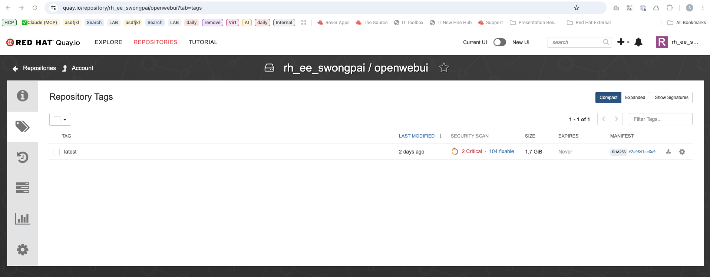
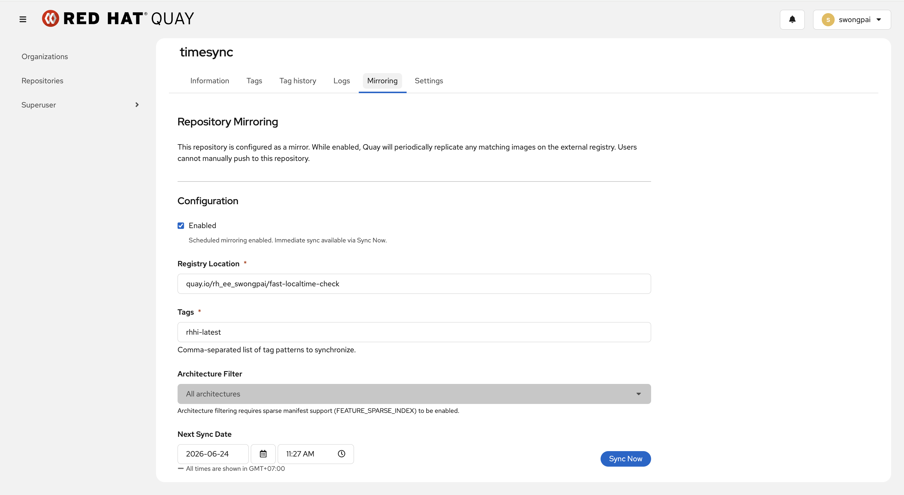
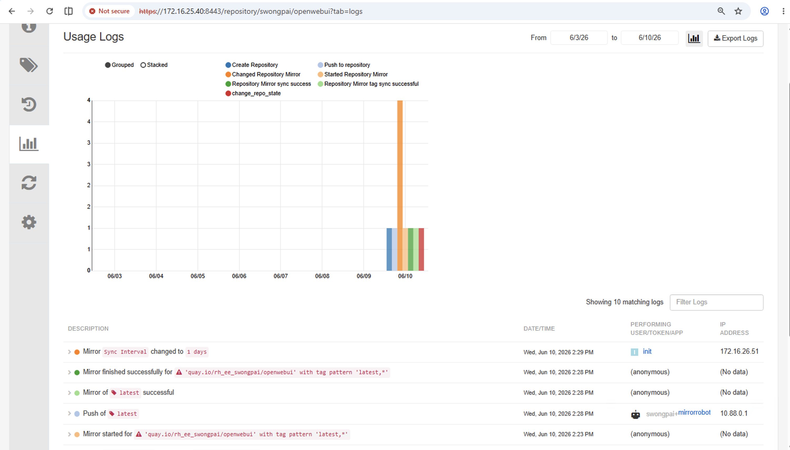
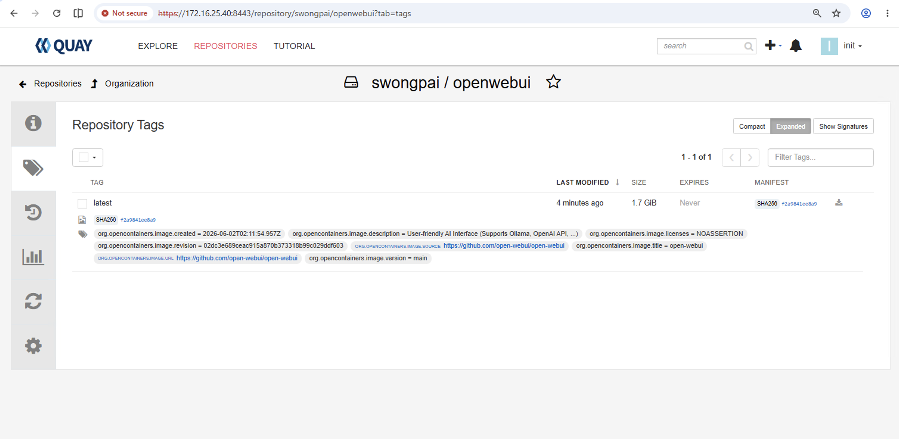
Geo-Replication
Replicate image data across multiple storage backends in different geographic regions. All Quay instances share a single metadata database but store blobs locally for low-latency pulls.
- Single global namespace —
quay.example.com/org/repo:tagworks from any region - Each region stores its own copy of image layers
- Pulls served from nearest storage backend
- Requires shared PostgreSQL and shared Redis across all regions (or external managed equivalents)
Quota Management & Auto-Pruning
Control storage consumption per organization and repository to prevent unbounded growth.
- Set warning threshold and reject threshold per org
- Pushes rejected when quota exceeded
- Track consumption via Quay UI or API
- Auto-pruning policies — org- or repo-level rules that delete tags automatically by tag count (keep newest N) or tag age (delete older than X days); multiple policies with regex tag-pattern filters can coexist
- Combine with tag expiration (per-tag TTL) for full lifecycle control
What's New in Recent Quay Releases
| Version | Highlights |
|---|---|
| 3.13–3.14 | Enhanced auto-pruning: tag-pattern (regex) filters and multiple policies per org/repo. |
| 3.15 | Image pull statistics (FEATURE_IMAGE_PULL_STATS) — see how often and when tags are pulled. Superuser panel in the v2 UI. |
| 3.16 | v2 React-based UI becomes the default UI. |
Day-2 Operations
Upgrading, monitoring, and maintaining your OpenShift cluster over its lifetime.
Cluster Upgrade Flow
etcd Backup
etcd is the key-value store that holds ALL cluster state — every resource, secret, config, and status. Regular backups are critical.
- Backup regularly to a secure location outside the cluster
- Run from any master node with a running etcd pod
- Backup during non-peak hours to minimize performance impact
- Do NOT backup before the first certificate rotation (24h after install)
# etcd backup command (run on any master node) sudo /usr/local/bin/cluster-backup.sh /home/core/assets/backup
etcd Restore Steps
Restoring etcd is a destructive operation that rolls the cluster back to the backup state. All changes after the backup are lost.
- Stop etcd on all control plane nodes
- Stop kube-apiserver on all control plane nodes
- Move etcd data directory to a backup location
- Run the recovery script on the recovery host with the backup snapshot
- Restart kubelet on all control plane nodes
- Turn off quorum guard to allow single-member bootstrap
- Force etcd redeployment to rebuild the cluster from the restored member
- Turn quorum guard back on after all members rejoin
- Force new rollout for kube-apiserver, kube-controller-manager, and kube-scheduler
Essential Day-2 Commands
# Check cluster version and upgrade status oc get clusterversion oc adm upgrade # Check all cluster operators oc get co # Check node status and drain oc get nodes oc adm drain <node> --ignore-daemonsets --delete-emptydir-data # Check certificate expiry oc -n openshift-kube-apiserver-operator get secret kube-apiserver-to-kubelet-signer -o jsonpath='{.metadata.annotations.auth\.openshift\.io/certificate-not-after}' # etcd backup oc debug node/<master-node> -- chroot /host /usr/local/bin/cluster-backup.sh /home/core/backup
Compliance Operator
The Compliance Operator enables automated compliance scanning and remediation against security benchmarks (CIS, NIST, PCI-DSS).